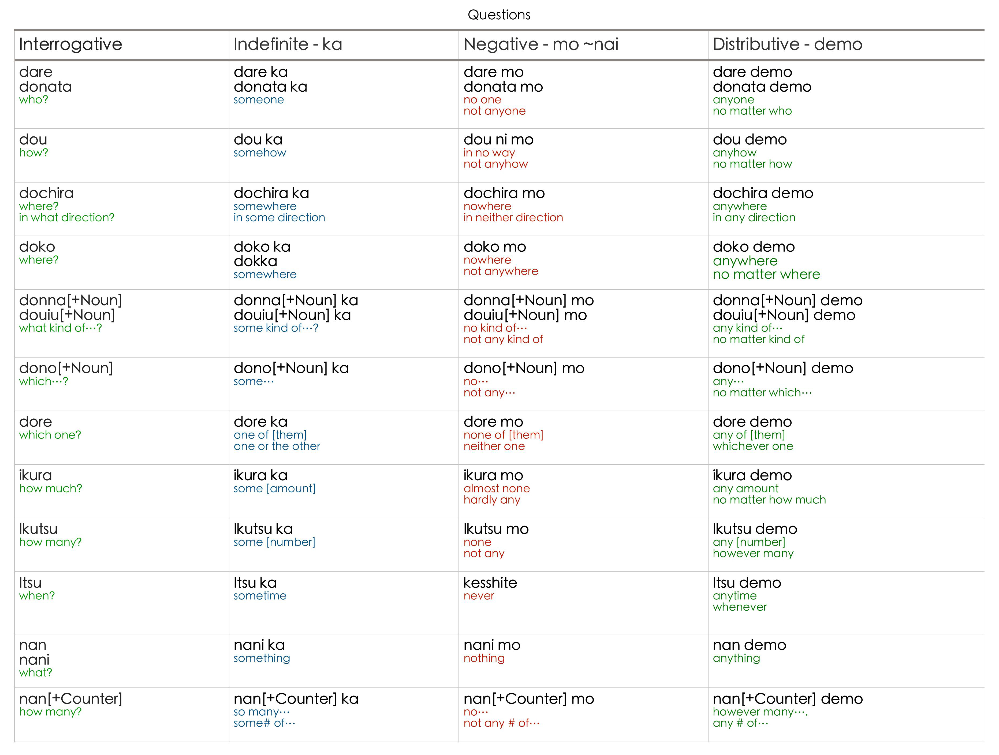
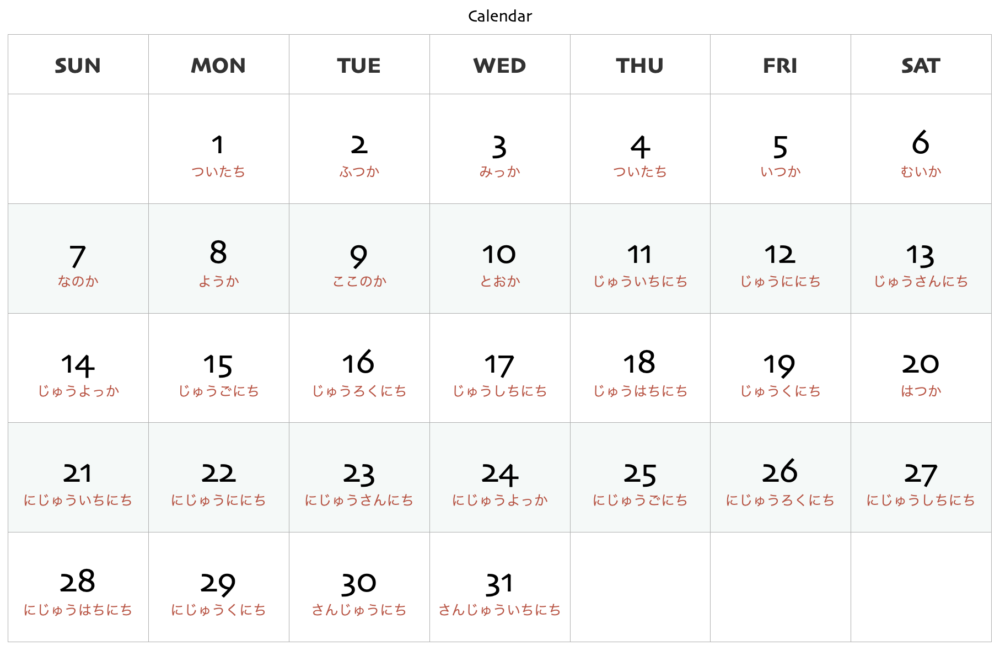

田舎学校
Introduction
Foreword
School in the countryside.
Scope
Intended for: Beginner to Intermediate
Not for: Total Beginner
Version
Version 🆅.3.1A
Learn
Terms
Terminologies
Concepts
Methods
Ways
Strategy
Input Stacking
Approach
Learn the Script
Learn the importance of verbs
Learn on a given situation
Output Stacking
Learn communication skills
Techniques
Learning Techniques
Memorize
Concept
Memory Formation
Memories
Types of memories
Kinds of memories
Enconding
Encoding Process
Techniques
Memorizing Techniques
Scripts
There are 3 writing system used in Japanese namely the Kanji, Hiragana and the Katakana scripts.
Kanji
Kanji was based on Chinese characters which represents a word and a meaning.
L5
L4
L3
L2
L1
Hiragana
Hiragana is a phonetic script used to represent Japanese sound.

Katakana
Katakana is a phonetic script used to represent Foreign loan words.

Review
L5
L4
L3
L2
L1
Situation
Chap.01: House Visit
Vocabularies
Expression
Dialogue
Narration
Interview
Chap.02: Meeting Outside
Vocabularies
Expression
Dialogue
Narration
Interview
Chap.03: Side Trip
Vocabularies
Expression
Dialogue
Narration
Interview
Chap.04: Store Order
Vocabularies
Expression
Dialogue
Narration
Interview
Chap.05: Sending Parcel
Vocabularies
Expression
Dialogue
Narration
Interview
Chap.06: Apartment Searching
Vocabularies
Expression
Dialogue
Narration
Interview
Chap.07: Talking Experience
Vocabularies
Expression
Dialogue
Narration
Interview
Chap.08: Habits Customs
Vocabularies
Expression
Dialogue
Narration
Interview
Chap.09: Travel
Vocabularies
Expression
Dialogue
Narration
Interview
Chap.10: Scholarship Information
Vocabularies
Expression
Dialogue
Narration
Interview
Chap.11: Onsen
Vocabularies
Expression
Dialogue
Narration
Interview
Chap.12: Discipline
Vocabularies
Expression
Dialogue
Narration
Interview
Chap.13: Trouble
Vocabularies
Expression
Dialogue
Narration
Interview
Chap.14: Seminar
Vocabularies
Expression
Dialogue
Narration
Interview
Chap.15: Laboratory
Vocabularies
Expression
Dialogue
Narration
Interview
Chap.16: Directions
Vocabularies
Expression
Sentences
Chap.17: Restaurant
Vocabularies
Expression
Sentences
Chap.18: Cooking
Vocabularies
Expression
Sentences
Chap.19: Health
Vocabularies
Expression
Sentences
Chap.20: Daily Routines
Vocabularies
Expression
Sentences
Verbs
V1.0: Negative Stem
V1.1: Passive Form
V1.2: Causative Form
V1.3: Causative Passive Form
V2.0: Noun Stem
V2.1: Masu Form
V3.0: Dictionary Form
V4.0: Command Stem
V4.1: Ba Form
V4.2: Potential Form
V5.0: Volitional Form
V6.0: Te Form
V7.0: Ta Form
V8.0: Condional Form
V9.0: Others
Elements
IC.1.0: Connectives
Connectives appear at the beginning of an independent sentence and indicates how that sentence relates to the previous one.
Types
① And
しかも ◦ Moreover, Nevertheless
それも ◦ In addition to that
さらに ◦ Furthermore, Moreover
そのうえ ◦ In addition
それに ◦ Besides, In additon, Moreover
また ◦ In addition, Too, Also, Likewise
それから ◦ And then, After
そして ◦ And, And then ② But
でも ◦ But
しかし ◦ But
ところが ◦ However
けれども ◦ But, However
それでも ◦ But still, Nevertheless ③ Or
または ◦ Or, Otherwise
それとも ◦ Or, Or else
あるいは ◦ Or, Either.. or ④ Cause & Reason, Effect & Result and Situation & Result
それで ◦ Thereupon, Because of that, That's why
すると ◦ Thereupon, Hereupon
だから ◦ So, Therefore
そこで ◦ So, Therefore
したがって ◦ Therefore, Consequently
そのけっか ◦ As a result of that
そのために ◦ Hence, For that reason ⑤ Change the Subject
ところで ◦ By the way ⑥ Reason for Something
なぜなら ◦ The reason is ⑦ Example
たとえば ◦ For example ⑧ Paraphrasing
つまり ◦ That is to say, In other words
ようするに ◦ In short, I a word, To sum up
ちなみに ◦ By the way, in this connection, incidentally Examples
① And
・彼女はフランス語が話せる。しかも流ちょうに話せる
・ちょっと話をしただけ。 それも小声で話ます
・彼は料理を二人分も食べた。さらに、食後ケーキも食べた
・あの人は頭がいい。そのうえ性格してもいい
・小川さんは仕事が早い。 それに、正確だ
・ノートパソコンは場所を取らない。また、持ち運びにも便利だ
・8時まで日本語の宿題うおした。それから映画をみに出かけた
・僕は駅前の喫茶店に行った。そしてそこで友達を待っていた ・She speaks French. Moreover, she's speaks fluently
・We talked for a monment.In addition to that we did it in a low voice
・He ate two portions of food. Furthermore, he had an after-dinner cake
・He's a smart guy. In addition, he's got a great personality
・Mr. Ogawa is a fast worker. In addition, he's accurate
・Laptops do not take up much space. Likewise, they are convenient to carry around
・I worked on my Japanese homework until 8 o'clock. And then, I went out to see a movie
・I went to a coffee shop in front of the station. And there I was waiting for my friend② But
・彼は新しい、いい車を持っている。でもめったに乗らない
・手紙を出した。しかし返事はこなかった
・息子は出掛けたと思っていた。ところが２階で昼寝していたんだ
・二時間待った。けれども、一郎は姿を現さなかった
・雨が激しく降っています。それでも私は行かなければならない。・He has a fine new car. But he almost never drives it
・I sent a letter. But no reply came
・I thought my son had gone out. However, he was upstairs taking a nap
・I have waited for 2 hours. However Ichiro did not show up
・It is raining heavily. But still I must go③ Or
・手紙を書くか、または電話する
・車で行きますか。それとも飛行機で行きますか
・この絵は彼が描いたのでしょうか。あるいはどこかから買って来たのでしょうか ・Either write a letter or make a phone call
・will you go by car? Or will you go by plane?
・Did he draw this painting? Or did he buy it from somewhere④ Cause & Reason, Effect & Result and Situation & Result
・昨日は京都へ出張していました。それでうちにいなかったんです
・私が別れようと言った。すると彼女雨は泣き出した
・日本語を勉強すると役に立つ。だから日本をしている
・おじいさんが大学卒業の日。3000ドルくれた。僕は日本へ行くことにした
・先学期はあまり勉強しなかった。したがって、成績も悪かった
・彼は遅く起きた。その結果、バスに乗り損なった
・そして次は私の番でした ・Yesterday, I was in Kyoto on business trip. That's why I wasn't at home
・I told her that we should break up. Thereupon, she started to cry
・If we study Japanese, it will be useful. So, I am studying Japanese
・My granfather gave me 3000 dollars on my graduation day. So I decided to go to Japan
・Last semester, I didn't study much. So my grades were bad
・He got up late. As a result of that, he missed the bus
・Then it was my turn⑤ Change the Subject
・ところでじんじゃ神社をし知っていますか？
・By the way, do you know what a Shinto shrine is⑥ Reason for Something
・なぜなら彼は病気だったからです
・The reason is because he was sick⑦ Example
・例えば、君は英語が好きですか
・For example, do you like English?⑧ Paraphrasing
・金がない。つまり、貧乏なんです
・要するに彼らは間違っている
・結局は金の問題だ
・ちなみに、言わなくちゃいけないことがあるんだけどさ・I don't have money. In other words, I am poor
・In a word, they are mistaken
・In the end, it's a question of money
・By the way, there's something I should tell youIC.2.0: Adverials
Adverbials usually appears in the beginning of a sentence.
① あいかわらず
・as usual ◦ as always
・相変わらず彼は公園でランチを食べています
・As always, he is eating lunch at the park② どうしても
・by any means ◦ reason
・どうしてもぼういはチップを取りませんでした
・For any reason, the bellboy would not accept a tip③ けっきょく
・after all ◦ in the end
・けっきょくだれにもわかりませんでした
・In the end, it wasn’t understood by anyone④ もちろん
・of course
・もちろんみんなに伝えておきます
・Of course, I will inform everyone⑤ もしかしたら
・perhaps ◦ it may be that
・もしかしたら来ないかも知れません
・Perhaps, he might not come for all we know⑥ なるほど
・indeed ◦ that’s right
・なるほどいい計画ですね
・Indeed, it is a good plan⑦ せっかく
・kindly ◦ with much effort
・せっかくためたお金を使ってしまって残念です
・With much effort saving the money, it was used up unfortunately⑧ とにかく
・anyway
・とにかく遅いですから帰りましょう
・Anyway, since it is late lets go home⑨ とりあえず
・for now ◦ fort the time being ◦ first of all ◦ at once
・取り敢えず社長の返事待ちましょう
・For the time being, lets wait for presidents reply⑩ わざわざ
・kindly ◦ especially
・わざわざここまでご案内下さってありがとう
・Especially guiding me this far, thank you⑪ やはり
・after all
・やはり会社の代理人して会議にしなきゃ
・After all, as the company’s representative⑫ やっぱり
・as expected
・やっぱり彼が来なかった
・As expected, he did not comeMC.1.0: I-Adjectives
Adjectives are words that describe nouns and pronouns.
Structure
① Forms
I-Adj (Plain Form - Non Past)
・yasui ⇢ yasuiI-Adj (Polite Form - Non Past)
・yasui ⇢ yasui desuI-Adj (Plain Form - Past Tense)
・yasui ⇢ yasukattaI-Adj (Polite Form - Past Tense)
・yasui ⇢ yasukatta desuI-Adj (Plain Form - Negative)
・yasui ⇢ yasukunaiI-Adj (Polite Form - Negative)
・yasui ⇢ yasukunai desu
・yasui ⇢ yasuku arimasenI-Adj (Plain Form - Past Negative)
・yasui ⇢ yasuku nakattaI-Adj (Polite Form - Past Negative)
・yasui ⇢ yasuku nakatta desu
・yasui ⇢ yasuku arimasen deshitaI-Adj.ad (Adverbial Form)
・yasui ⇢ yasukuI-Adj (Connective Form)
・yasui ⇢ yasukuteI-Adj (Connective Form - Negative)
・yasui ⇢ yasuku nakuteI-Adj (Conditional Form - ba)
・yasui ⇢ yasukerebaI-Adj (Conditional Form - tara)
・yasui ⇢ yasukattaraI-Adj (Root)
・yasuExamples
MC.2.0: Na-Adjectives
Adjectives are words that describe nouns and pronouns.
Structure
① Forms
Na-Adj (Plain Form - Non Past)
・genki ⇢ genki daNa-Adj (Polite Form - Non Past)
・genki ⇢ genki desuNa-Adj (Plain Form - Past)
・genki ⇢ genki dattaNa-Adj (Polite Form - Past)
・genki ⇢ genki deshitaNa-Adj (Plain Form - Negative)
・genki ⇢ genki ja naiNa-Adj (Polite Form - Negative)
・genki ⇢ genki dewa nai
・genki ⇢ genki dewa arimasenNa-Adj (Plain Form - Past Negative)
・genki ⇢ genki ja nakattaNa-Adj (Polite Form - Past Negative)
・genki ⇢ genki dewa nakatta
・genki ⇢ genki dewa arimasen deshitaNa-Adj (Connective Form)
・genki ⇢ genki deNa-Adj (Connective Form - Negative)
・genki ⇢ genki ja nakute
・genki ⇢ genki dewa nakuteNa-Adj (Adverbial Form)
・genki ⇢ genki niNa-Adj (Adjectival Form)
・genki ⇢ genki naExamples
MC.3.0: Nouns
Nouns are words which denote people, animals, places, things, or concepts and doesn’t conjugate or change it’s form.
Structure
① Forms
Noun (Plain Form - Non Past)
・hana ⇢ hana daNoun (Polite Form - Non Past)
・hana ⇢ hana desuNoun (Plain Form - Past)
・hana ⇢ hana dattaNoun (Polite Form - Past)
・hana ⇢ hana deshitaNoun (Plain Form - Negative)
・hana ⇢ hana ja naiNoun (Polite Form - Negative)
・hana ⇢ hana dewa nai
・hana ⇢ hana dewa arimasenNoun (Plain Form - Past Negative)
・hana ⇢ hana ja nakattaNoun (Polite Form - Past Negative)
・hana ⇢ hana dewa nakatta
・hana ⇢ hana dewa arimasen deshitaNoun (Connective Form)
・hana ⇢ hana deNoun(Connective Form - Negative)
・hana ⇢ hana ja nakute
・hana ⇢ hana dewa nakuteExamples
MC.4.0: Adverbs
Adverbs are words that precede and modify verbs, adjectives, other adverbs, and even whole clauses.
Structure
① Forms: Derivation
Adjective Stem ⇢ Adverb
・うまい ⇢ うまく ◦ skillfully, well
・やすい ⇢ やすく ◦ inexpensively, cheaply
・ふかい ⇢ ふかく ◦ deeply, intimately
・はやい ⇢ はやく ◦ early, soon, quickly
・すごい ⇢ すごく ◦ awfully, very, immensely
・みじかい ⇢ みじかく ◦ shortly, briefly
・くわしい ⇢ くわしく ◦ in detail, fullyNa Adjective ⇢ Adverb
・きれい ⇢ きれいに ◦ neatly, carefully
・とくべつ ⇢ とくべつに ◦ speacilly, particularlly
・たいせつ ⇢ たいせつに ◦ carefully, with great careNo Adjective ⇢ Adverb
・はだか ⇢ はだかで ◦ nakedlyOnomatope ⇢ Adverb
・ちゃんと ⇢ ちゃんと ◦ properly, deligently, exactly
・ヨボヨボ ⇢ ヨボヨボ ◦ shaky, unsteadily
・すっかり ⇢ すっかり ◦ completely, entirely・ゆっくり ⇢ ゆっくり(と) ◦ slowly, leisurely
・ピカピカ ⇢ ピカピカ(と) ◦ sparkly
・ふらふら ⇢ ふらふら(と) ◦ shaky, unsteadilyVerbs ⇢ Adverb
・はじめる ⇢ はじめて ◦ first time
・きわめる ⇢ きわめて ◦ extremely, exceedingly
・すぐれる ⇢ すぐれて ◦ exceedingly
・追う ⇢ おって ◦ later on, shortly, in due courseVerbs (Duplication) ⇢ Adverb
・おそれる ⇢ おそる-おそる ◦ timidly
・かわる ⇢ かわる-がわる ◦ in-turn
・みる ⇢ みる-みる ◦ as you look onNouns (Adverbial Nouns) ⇢ Adverb
These are used as an adeverb to express time
・いま ⇢ いま ◦ now
・きょう ⇢ きょう ◦ today
・きのう ⇢ きのう ◦ yesterday
・あした ⇢ あした ◦ tomorrow
・あさ ⇢ あさ ◦ morning
・ひる ⇢ ひる ◦ noon
・よる ⇢ よる ◦ night
・はる ⇢ はる ◦ spring
・なつ ⇢ なつ ◦ summer
・あき ⇢ あき ◦ autumn
・ふゆ ⇢ ふゆ ◦ winter
・むかし ⇢ むかし ◦ old timesNouns・Verbs + Compound Particle (Pre-Verbal Form) ⇢ Adverbials
Modifies, describes or gives more information about the verb it’s closely connected
・日本の文化について話す
・年を取るにつれて記憶力が衰える・To talk about Japanese culture
・As one grows old one's memory failsTypes
① Adverbs of Manner
Indicates the way some action is being performed
・きれい ⇢ きれいに ◦ neatly
・すっかり ⇢ すっかり ◦ completely
・ゆっくり ⇢ ゆっくり ◦ well
・まっすぐ ⇢ まっすぐ ◦ straightly
・ちょうど ⇢ ちょうど ◦ exactly
・はっきり ⇢ はっきり ◦ clearly
・まったく ⇢ まったく ◦ really
・ちゃんと ⇢ ちゃんと ◦ properly
・きちんと ⇢ きちんと ◦ accurately
・ぶじ ⇢ ぶじに ◦ safely
・さっそく ⇢ さっそく ◦ immediately ② Adverbs of Degree
Indicates the degree to which the word it modifies
・もっと ⇢ もっと ◦ more, even more, further
・もっとも ⇢ もっとも ◦ extremely, most
・いちばん ⇢ いちばん ◦ most, number one
・だいぶ ⇢ だいぶ ◦ pretty, considerably
・ひじょう ⇢ ひじょうに ◦ very, extremely
・ほとんど ⇢ ほとんど ◦ almost, mostly
・いっさい ⇢ いっさい ◦ entirety, (not) at all, never
・じつ ⇢ じつに ◦ really/very clever
・かなり ⇢ かなり ◦ considerably, fairly
・けっこう ⇢ けっこう ◦ quite, fairly, considerably
・きわめて ⇢ きわめて ◦ extremely, exceedingly
・すっかり ⇢ すっかり ◦ completely, entirely
・たいへん ⇢ たいへん ◦ very, greatly, terribly
・とても ⇢ とても ◦ very, exceedingly
・すごく ⇢ すごく ◦ very, immensely
・たくさん ⇢ たくさん ◦ a lot, sufficiently
・おおい ⇢ おおいに ◦ a lot, much, greatly
・わずか ⇢ わずかに ◦ a little, slightly
・ずいぶん ⇢ ずいぶん ◦ very, etremely, terribly
・すこし ⇢ すこし ◦ a little, a few
・あまり ⇢ あまり ◦ (not) very much
・ぜんぜん ⇢ ぜんぜん ◦ (not) at all
・なかなか ⇢ なかなか ◦ pretty, fairly
・まあまあ ⇢ まあまあ ◦ so-so③ Adverbial Nouns of Time and Frequency
Indicates the time and frequency to which the word it modifies
・あらかじめ ⇢ あらかじめ ◦ beforehand, previously
・はじめ ⇢ はじめに ◦ firstly, first of all
・いま ⇢ いま ◦ now
・いまにも ⇢ いまにも ◦ any moment
・このあいだ ⇢ このあいだ ◦ the other day, lately
・このところ ⇢ このところ ◦ lately, recently
・まだ ⇢ まだ ◦ still, as yet, only
・まもなく ⇢ まもなく ◦ soon, shortly, in a moment
・まれ ⇢ まれに ◦ rarely
・また ⇢ また ◦ again
・もう ⇢ もう ◦ already
・むかし ⇢ むかし ◦ in the past
・さいご ⇢ さいごに ◦ finally
・さいきん ⇢ さいきん ◦ recently
・さいしょ ⇢ さいしょに ◦ first, onset
・さき ⇢ さきに ◦ ahead (of), first
・さきほど ⇢ さきほど ◦ a while ago
・さっき ⇢ さっき ◦ a moment ago
・すぐ ⇢ すぐに ◦ immediately
・すこし ⇢ すこし ◦ a little, a bit
・たびたび ⇢ たびたび ◦ often
・しばしば ⇢ しばしば ◦ frequently
・しょっちゅう ⇢ しょっちゅう ◦ always, frequently
・すで ⇢ すでに ◦ already, too late
・つぎ ⇢ つぎに ◦ next to
・よく ⇢ よく ◦ often
・やがて ⇢ やがて ◦ shortly
・ずっと ⇢ ずっと ◦ all along, throughoutExamples
MC.5.0: Onomatope
Onomatope are group of words which have their meaning indicated by the sounds they mimic.
Structure
Examples
MC.6.0: Demonstratives
Demonstratives are words that indicate entities to which a speaker is referring.
ko
kore this・this one
korera these・these ones
kono (+noun) this (noun)
koko here・this place
kochira this way・this direction
kouiu (+noun)
such・this sort of・like this (noun)
konna (+noun)
such・this sort of・like this・this kind of (noun)
konoyouna (+noun)
such・this sort of・like this・this kind of (noun)
konnani
this (much)・to this degree・like this・in this way
konoyouni
in this manner・in this way・like this
kou in this way・thus・such
・これは本です
・これを見てくれ
・このペンは誰のです
・この雨の中を歩いてきたのですか
・ここから消えてくれ
・ここが私の通った学校だ
・ここまでは追ってこないだろう
・こちらへどうぞ
・こちらを向いてください
・こういうこと
・こういうふうにやるとうまくいくよ
・こんな大雪は珍しい
・こんな気持ちになったのは初めてだ
・このような話をどこかで聞いたことがある
・昔の夏はこんなに暑くなかった
・山手線がこんなに遅れることは珍しい
・このようにやってごらんなさい
・ラケットはこう持ってください
・いいかい, 説明書にこう書いてある・This is a book
・Look at this
・Whose pen is this?
・Have you walked in this rain?
・Get out of here
・This is the school I went to
・They won't follow us this far
・This way, please
・Please turn around
・Things like this
・If you do it like this, it works
・Such heavy snow is rare
・I've never felt like this before
・I've heard stories like this somewhere before
・It wasn't always this hot in the summer
・It's rare for the Yamanote Line to be this late
・Try it this way
・Hold your racquet like this
・Listen! This is what it says in the explanationso
sore that・that one
sorera those・those ones
sono (+noun) that (noun)
soko there・that place
sochira that way・that direction
souiu (+noun)
such・that sort of・like that (noun)
sonna (+noun)
such・that sort of・like that・that kind of (noun)
sonoyouna (+noun)
such・that sort of・like that・that kind of (noun)
sonnani
that (much)・to that degree・like that・in that way
sonoyouni
in that manner・in that way・like that
sou in that way・thus・such
・それ以前
・それ以後
・それについては後で述べる
・その意気だ
・それは僕がなくしたその時計だった
・そこが困ったところなんだよ
・そこから先は言わなくてもいい
・そこまでは考えなかった
・そちらのを見せてください
・今からそちらへ伺います
・そちらの様子はいかがですか
・そういう場合には
・若者には時々そういうことがあるんだけど
・そういうわけさ
・そんなことを言ったら誤解されるよ
・そんな自分がつくづくいやになる
・そんなつもりじゃなかったんだ
・そんなに使ったのか
・そんなに寒くない
・ほんとにそうなんですか
・そう考えると
・わかりました.そうします
・そう言われればそんな気がしてきた・Before that
・After that
・We'll talk about that later
・That's the spirit!
・It was that watch I lost
・That's where the trouble lies
・You don't have to tell me where to go from there
・I didn't think that far ahead
・Please show me that
・I'm on my way there now
・How are things going over there?
・In that case
・I mean, that's what happens sometimes with young people
・That's how it is
・You'll be misunderstood if you say that
・I hate myself for that.
・I didn't mean it like that
・You've spent that much?
・It's not that cold
・Is it really so?
・When you think about it
・I understand. I will do that
・That's what I thought when you said thata
are there・that one there
arera those・those over there
ano (+noun)
that (noun) over there
asoko
over there・that place there
achira that way・that direction
auiu (+noun)
such・that sort of・like that (noun)
anna (+noun)
such・that sort of・like that・that kind of (noun)
anoyouna (+noun)
such・that sort of・like that・that kind of (noun)
annani
that (much)・to that degree・like that・in that way
anoyouni
in that manner・in that way・like that
aa in that way・thus・such
・あれが今度の市長です
・あれは何の音だろう
・あれは何ですか
・あの山は何という山ですか
・あの後ずっと
・あの話はどうなってる?
・あそこまで競走しよう
・あそこのラーメン屋に入ろう
・普通あそこまで言わないよ
・あちらに見える山
・あちらが新製品でございます
・あちらの気候は日本より厳しい
・あんな正直な人
・あんな美しい絵
・私はあんなに偉い人は見たことがない・That's the new mayor
・What was that sound?
・What is that?
・What is that mountain called?
・After all that time
・What's that story?
・Let's race up there!
・Let's go to that noodle shop
・They don't usually say that much.
・The mountain you can see over there
・That's the new product!
・The climate there is harsher than in Japan
・Such an honest man
・Such a beautiful picture
・I've never seen anyone that so great in my lifedo
dore which・which one
dorera which・which ones
dono (+noun) which (noun)
doko where・what place
dochira
which way・which direction・which one
douiu (+noun)
such what・what sort of・like what (noun)
donna (+noun)
such what・what sort of・like what・what kind of (noun)
donoyouna (+noun)
such what・what sort of・like what・what kind of (noun)
donnani
how (much)・to what degree・like what・in what way・no matter how
donoyouni
how・in what manner・in what way・like what
dou
in what way・ how about・how・no matter how
・ジョッキは、大、中、小のどれがいいですか
・ビールは、ジョッキとボトルとどっちがいいですか
・どの車がいいですか
・どの部屋がいいですかか
・どこから来たの
・今日はどこからですか
・対戦相手はどこですか
・どちらへお出でですか
・光と音とどちらが速いか
・お国はどちらですか?
・どういう風に
・どういう訳で
・それはどういう訳ですか
・いったいこれはどういうこと?
・その人はどういう性格の人ですか
・どんな人ですか
・今日はどんな具合ですか
・子供にどんな本を読ませたらいいでしょうか
・どんなに金があっても
・どんなに勉強しても
・どうなさいましたか
・どうしたの
・どう考えてみても
・どう考えてみてもそれはおかしいよ・Which one do you like a large, medium or small mug?
・Which one do you prefer a mug of beer or a bottle?
・Which car would you like to buy?
・Which room would you like?
・Where do you come from?
・Where do you come from today?
・Where are the opponents?
・Where are you going?
・Which is faster, light or sound?
・Where is your country?
・In what way?
・For what reason?
・What is the reason?
・What is this all about?
・What kind of person is he?
・What kind of person are you?
・How are you feeling today?
・What books should I read to my child?
・No matter how much money you have
・No matter how much you study
・How can I help you?
・What's the matter?
・No matter how you look at it
・No matter how you look at it, that's not rightMC.7.0: Interrogatives
Interrogatives are words used to ask questions or the words that represents the thing we don’t know.

① Exceptions:
1. Ikaga is formal way of "how".
2. Ikutsu mo means several with positive verb.
3. Itsumo means always.
4. Itsumademo means forever.② Indefinite:
1. だれかがでんわをしました
2. どこかへいきましょうか
3. いくつかかわせていただけますか1. Somebody telephoned
2. Shall we go somewhere?
3. May i buy some③ Negatives:
1. Daremo and nanimo are used only with a negative verb or adjective.
2. Others may use with either negative or positive.1. だれもきませんでした
2. どうにもできないとおもいます
3. 時計をいくつももっています
4. 時計をいくつももっていません 1. Nobody came
2. I think there is no way it can be done
3. I have several watches
4. I don’t have any watches④ Distributive:
1. 何でも食べられます
2. どれでもいいとおもいます
3. どのカメラでも高いです 1. I can eat anything
2. I think either one of them is okay
3. Any camera would be expensiveMC.8.0: Nominalizer
Nominalization is the process of turning words/phrases into nouns/noun phrases that aren’t nouns.
no
① noto~・~ing・that
no is use when referring to
A specific instance of an activity
A concrete or direct action
A personal or familiar knowledge
A back referral Using perception verbs
A specific instance of an activity
⚭ Vru・Vta + no
・来年日本へ行くのは田中さんです
・田中さんが日本へ行くのは来年です
・この手紙を書いたのは誰? ・It is Mr.Tanaka will go to Japan next year
・It is next year that Mr.Tanaka will go to Japan
・Who wrote this letter?A concrete or direct action
⚭ Vru + no
・これを持ち上げるのを手伝ってくれ
・お母さんが晩御飯を作るのを手伝う
・彼女が化粧するのを待つ
・彼女が買い物を終えるのを待っています
・子供がテレビを見るのが止めた
・友達が帰るのを止めた
・宿題をするの忘れた・Help me to lift this
・I help my mom to cook dinner
・I wait for my girlfriend to put her make up on
・I'm waiting for her to finish her shopping
・I stopped my children from watching TV
・I stopped my friend to go home
・I forgot to do my homeworkA personal/familiar knowledge
⚭ Vru + no
・田中さんは日本語を教えるのが上手です
・サッカーを見るのが好きです
・自転車に乗るのが嫌いです
・ピアノを弾くのが得意です
・ギターを弾くのが上手です
・お酒を飲むのが苦手です
・絵を描くのが下手です・Tanaka-san is good at teaching Japanese
・I like to watch football
・I don't like to ride a bicycle
・I am good at playing the piano
・I am good at playing the guitar
・I am not good in drinking alcohol
・I am not good at drawingA back referral
⚭ Vru + no
・日本語を話すのは難しいです
・運転するのは簡単です
・野球をするのは楽しいです
・漢字を覚えるのは面白くない
・こうやって振り返るのって面白いよね・Speaking Japanese is difficult
・Driving is easy
・Playing baseball is fun
・Memorizing Kanji is not interesting
・Looking back like this is interestingUsing perception verbs
⚭ Vru + no
・彼が歩いているのを見た
・その人が私の財布を盗むのを見た
・僕はしずえが泳ぐのを見ていた
・白い車が走り去るのが見えた
・田中さんがバイオリンを弾くのを聞いた
・音が崩れるのが聞こえます
・誰かが歌っているのが聞こえます
・家が揺れるのを感じた・I saw him walking
・I saw that man steal my wallet
・I was watching Shizue swim
・I saw a white car drives off
・I heared Ms.Tanaka play the violin
・I hear a sound crumbling
・I hear someone singing
・I felt the house shakekoto
② kototo~・~ing・that
koto is use when referring to
An abstract concept or thinking
A significant knowledge or concept
A notable experience A decision
A potential or ability A nominalized Engine
Following a grammatical pattern
A abstract concept or thinking
⚭ Vru + koto
・娘に早く就職させることを考えた
・日本語では一つの漢字にの読み方があることを習った・I thought about getting my daughter a job as soon as possible
・I learnt that in Japanese there are different ways of reading a single kanjiA significant knowledge or concept
⚭ Vru + koto
・毎日練習すること(は/が)大切です
・漢字をを伝教すること(は/が)必要だ
・そんなことが可能なんだろうか・It’s important to practice everyday
・Studying Kanji is necessary
・Is that really possible?Following a grammatical pattern・A notable experience
⚭ Vta + koto ga aru
・日本に行ったことがあります
・寿司を食べたことがあります
・何度か日本食を食べたことがあります・I have been to Japan
・I've eaten sushi
・I've eaten Japanese food a few timesFollowing a grammatical pattern・A potential or ability
⚭ Vru + koto ga dekiru
・日本語を話すことができる
・ギターを弾くことができる・I can speak Japanese
・I can play a guitarFollowing a grammatical pattern・A decision
⚭ Vru + koto ni suru
⚭ Vru + koto ni naru
⚭ Vru + koto ni kimeru
・私は来年小坂に転勤することになりました
・毎日漢字を十覚えることにしました
・彼は自分で行くことに決めた・I has been decided that I will transfer to Kosaka next year
・I have decided to memorise ten kanji every day
・He decided to go by himselfFollowing a grammatical pattern・A nominalized Engine
⚭ .. + koto da・desu
・趣味は写真を撮ることです
・夢は世界中を旅行することです
・この料理の特色はいろいろな材料が入っていることです・My hobby is taking photos
・My dream is to travel around the world
・The feature of this dish is that it contains various ingredientsMC.9.0: Counters
Numbers
① Numbers: 1-10
・一 ichi
・二 ni
・三 san
・四 yon
・五 go
・六 roku
・七 nana/shichi
・八 hachi
・九 kyuu
・十 juuGeneric Counters
① Counters: 1-10
・ひとつ hitotsu
・ふたつ futatsu
・みっつ mittsu
・よっつ yottsu
・いつつ itsutsu
・むっつ muttsu
・ななつ nanatsu
・やっつ yatsu
・ここのつ kokonotsu
・とお tooUnit Counters
① Time
・秒 びょう ◦ seconds
・分 ふん・ぷん・ぶん ◦ minutes
・月 かげつ ◦ number of months
・月 つき ◦ number of months
・年 ねん ◦ number of years
・時間 じかん ◦ number of hours
・週間 しゅうかん ◦ number of weeks② Numerical Value
・十 じゅう ◦ tens
・百 ひゃく ◦ hundreds
・千 せん ◦ thousand
・万 まん ◦ ten thousand③ Percentage
・割 わり ◦ percent④ Weight
・キロ キロ ◦ kilo
・グラム グラム ◦ gram
・ミリグラム ミリグラム ◦ milligram⑤ Distance
・メートル メートル ◦ meter
・センチ センチ ◦ centimeter⑥ Volume
・リットル リットル ◦ literClassifiers
① Classification
・歳 さい ◦ age
・匹 ぴき・ひき・びき ◦ pets
・頭 とう ◦ big animals
・羽 わ ◦ birds
・冊 さつ ◦ books, album, magazine
・枚 まい ◦ flat things
・回 かい ◦ number of times
・階 かい ◦ building floors
・個 こ ◦ small objects, individual
・缶 かん ◦ cans
・本 ぽん・ほん・ぼん ◦ cylindrical things
・人 じん・り ◦ person
・名 めい ◦ person
・台 だい ◦ machines
・日 か・にち ◦ day
・月 がつ ◦ month
・年 ねん ◦ years
・席 せき ◦ numbers of seats
・段 ふだん ◦ stairs, steps, drawers, layer
・時 じ ◦ o’clock
・点 てん ◦ points, mark
・杯 ぱい・はい・ばい ◦ liquid in glasses, bowls
・倍 ばい ◦ multiples, -fold as in “twofold"
・泊 はく・ぱく ◦ night stay
・軒 けん ◦ buildings, houses
・番 ばん ◦ number (ex. no. 2 - ni ban)
・課 か ◦ chapter, lesson
・次 じ ◦ stage, order, timesOrdinals
① Suffix: 目 ◦ is added to indicate order
・3 杯目 ◦ Third bowl
・3 回目 ◦ Third time
・1 軒目 ◦ First house/building
・4 個目 ◦ Fourth one
・2 人目 ◦ The second person・一列目の席 ◦ The first row seat
・一番目の子 ◦ The first girl
・一つ目の信号 ◦ The first traffic light
・いくつ目の駅 ◦ The nth station (How many stations?)② Prefix: 第 ◦ is added to indicate order
・第一課 ◦ The first chapter
・第二期 ◦ The second term
・第二段階 ◦ The second stage
・第一次産業 ◦ Primary industry
・第一次予防 ◦ Primary prevention
・第二次集団 ◦ Secondary group
・第二次製品 ◦ Secondary productAdverbial Quantifiers
① Adverbs
・多い おおい ◦ many
・少し すこし ◦ a few, a little
・ちょっと ちょっと ◦ a few, a little
・たくさん たくさん ◦ a lot, plenty, manyMC.10: Affixes
Prefix
A prefix is a short element that is attached to the beginning of a word to add an additional meaning to or to change the meaning of the word.
・お olite prefix
・可 able, ible
・各 each, several
・片 one
・逆 counter, reverse
・ご polite prefix
・準 semi, quasi, assoc
・諸 many, various
・素 bare
・全 whole, entire
・総 grand, general
・数 several, a number of ・お手紙・letter・お上手・skillful・お忙しい・busy
・可燃物・flammable thing・可溶性・solubility
・各国・each country・各部屋・each room
・片手・one hand・片一方・one of the two・片時・a monent
・逆効果・counter productive・逆コース・reverse course
・ご家族・your family・ご結婚・marriage
・準決勝・semi-final・準会員・associate member
・諸設備・many facilities・諸物価・various prices
・素足・bare foot・素焼き・unglazed pottery
・全国民・the whole nation・全人口・entire population
・総選挙・general election・総合計・grand total
・数多く・in large numbers・数校・several schoolsSuffix
A suffix is a short element that is attached to the end of a word to change the meaning of or to add an additional meaning to the word.
・家 er, ian, ist
・限り limited to, only
・方 how to, a way of
・方 plural marker
・形 shaped
・型 type, model
・がち tend to, often
・ぎみ verging on ・音楽家・musician・専門家・specialist・資本家・capilist
・今週限り・limited to this week・一度限り・only once
・読み方・how to read・way of reading
・あなた方・you・先生方・the teachers
・卵形・egg-shaped・三日月形・cresent
・箱型・box type・A型・type A・1990年型・1990 model
・忘れがち・tend to・病気がち・often get ill
・太りぎみ・verging on obesity・風邪ぎみ・have a slight coldMC.11: Time
Years
Nan nen(kan) desu
ka?How many weeks?
・一年(間) ・ichi-nen(kan)
・二年(間) ・ni-nen(kan)
・三年(間) ・san-nen(kan)
・四年(間) ・yo-nen(kan)
・五年(間) ・go-nen(kan)
・六年(間) ・roku-nen(kan)
・七年(間) ・nana-nen(kan)
・八年(間) ・hachi-nen(kan)
・九年(間) ・kyuu-nen(kan)
・十年(間) ・juu-nen(kan)
・十一年(間) ・juuichi-nen(kan)Months
Nan kagetsu(kan) desu
ka?How many months?
・一か月(間) ・ik-kagetsu(kan)
・二か月(間) ・ni-kagetsu(kan)
・三か月(間) ・san-kagetsu(kan)
・四か月(間) ・yon-kagetsu(kan)
・五か月(間) ・go-kagetsu(kan)
・六か月(間) ・rok-kagetsu(kan)
・七か月(間) ・nana-kagetsu(kan)
・八か月(間) ・hachi-kagetsu(kan)
・九か月(間) ・kyuu-kagetsu(kan)
・十か月(間) ・juk-kagetsu(kan)
・十一か月(間) ・juuik-kagetsu(kan)Weeks
Nan shuu(kan) desu
ka?How many weeks?
・一週(間) ・is-shuu(kan)
・二週(間) ・ni-shuu(kan)
・三週(間) ・san-shuu(kan)
・四週(間) ・yon-shuu(kan)
・五週(間) ・go-shuu(kan)
・六週(間) ・roku-shuu(kan)
・七週(間) ・nana-shuu(kan)
・八週(間) ・has-shuu(kan)
・九週(間) ・kyuu-shuu(kan)
・十週(間) ・jus-shuu(kan)
・十一週(間) ・juuis-shuu(kan)Days
Nan nichi(kan) desu
ka?How many days?
・一日(間) ・ichi-nichi(kan)
・二日(間) ・futsu-ka(kan)
・三日(間) ・mik-ka(kan)
・四日(間) ・yok-ka(kan)
・五日(間) ・itsu-ka(kan)
・六日(間) ・mui-ka(kan)
・七日(間) ・nano-ka(kan)
・八日(間) ・you-ka(kan)
・九日(間) ・kokono-ka(kan)
・十日(間) ・too-ka(kan)・十一時(間) ・juuichi-nichi(kan)
・十二時(間) ・juuni-nichi(kan)
・十三時(間) ・juusan-nichi(kan)
・十四時(間) ・juuyok-ka(kan)
・十五時(間) ・juugo-nichi(kan)
・十六時(間) ・juuroku-nichi(kan)
・十七時(間) ・juusichi-nichi(kan)
・十八時(間) ・juuhachi-nichi(kan)
・十九時(間) ・juuku-nichi(kan)
・二十時(間) ・hatsu-ka(kan)Hours
Nan jikan desu ka?How many hours?
・一時間 ・ichi-jikan
・二時間 ・ni-jikan
・三時間 ・san-jikan
・四時間 ・yo-jikan
・五時間 ・go-jikan
・六時間 ・roku-jikan
・七時間 ・shichi-jikan
・八時間 ・hachi-jikan
・九時間 ・ku-jikan
・十時間 ・juu-jikan
・十一時間 ・juuichi-jikan
・十二時間 ・juuni-jikanMinutes
Nan pun desu ka?How many minutes?
・一分 ・ip-pun
・二分 ・ni-fun
・三分 ・san-pun
・四分 ・yon-pun
・五分 ・go-fun
・六分 ・rop-pun
・七分 ・nana-fun
・八分 ・hap-pun
・九分 ・kyuu-fun
・十分 ・jup-pun
・十一分 ・juuichi-pun
・十二分 ・juuni-fun
・十五分 ・juugo-fun
・三十分 ・sanju-punSeconds
Nan byou desu ka?How many seconds?
・一秒 ・ichi-byou
・二秒 ・ni-byou
・三秒 ・san-byou
・四秒 ・yon-byou
・五秒 ・go-byou
・六秒 ・roku-byou
・七秒 ・nana-byou
・八秒 ・hachi-byou
・九秒 ・kyuu-byou
・十秒 ・juu-byou
・十一秒 ・juuichi-byou
・十二秒 ・juuni-byouTime Expression
Time of the day
Nan ji desu ka?What time is it?
・１時 ・いちじ ・1 o'clock
・２時 ・にじ ・2 o'clock
・３時 ・さんじ ・3 o'clock
・３時５分 ・さんじごふん ・3:05
・３時半 ・さんじはん ・3:30
・午後３時５分 ・ごごさんじごふん ・3:05 pm
・午前３時５分 ・ごぜんさんじごふん ・3:05 am・もう７時だ ・It's 7 o'clock already
・もう７時すぎだ ・It's already past 7
・７時頃にね ・See you about 7
・７時前にね ・See you a liitle before 7
・７時過ぎにね ・See you a little past 7
・７時５分前 ・5 minutes before 7 o'clock
・７時５分過ぎ ・5 minutes past 7 o'clock・９時に終わる ・I'll be done at 9:00
・９時に終わった ・I finished at 9:00
・９時で終わる ・It will be over at 9:00
・９時まで終わる ・It will be until 9:00
・６時まで待ちなさい ・Wait till 6:00
・７時に起きた ・I woke up at 7:00
・７時に帰ってきた ・I'll be back at 7:00
・今晩６時まで暇です ・I'm free until 6:00 this evening
・普通午後１１時に寝る ・I usually go to bed at 11:00pmDays of the week
Kyou wa nan youbi desu
ka?What day is today?
・月曜日 ・げつようび ・Monday
・火曜日 ・かようび ・Tuesday
・水曜日 ・すいようび ・Wednesday
・木曜日 ・もくようび ・Thursday
・金曜日 ・きんようび ・Friday
・土曜日 ・どようび ・Saturday
・日曜日 ・にちようび ・SundayDays of the month
Kyou wa nan nichi desu
ka?What is the date today?

Months of a year
Nan gatsu desu ka?What month is it?
・一月 ・いちがつ ・January
・二月 ・にがつ ・Febuary
・三月 ・さんがつ ・March
・四月 ・しがつ ・April
・五月 ・ごがつ ・May
・六月 ・ろくがつ ・June
・七月 ・しちがつ ・July
・八月 ・はちがつ ・August
・九月 ・くがつ ・September
・十月 ・じゅうがつ ・October
・十一月 ・じゅういちがつ ・November
・十二月 ・じゅうにがつ ・DecemberMC.12: Location
Existence
Place of existence
・机の上に本があります
・駅の前にお店があります・There is a book on my desk
・There is a store in front of the stationLocation
Place of location
・私の家族は香港にいます
・私たちは東京駅の近くに住んでいます・My family is in Hongkong
・We live near Tokyo StationAction
Place of action
・図書館で勉強しています
・喫茶店で話しています
・映画館で映画を見ています
・レストランでケーキを食べています・I'm studying in the library
・Talking in a coffee shop
・Watching a movie at the cinema
・Eating a cake at a restaurantRecipient
Place of recipient of the object acted upon
・ペンをテーブルの上に置く
・財布にお金入れます
・ノートに名前を書きます・Place the pen on the table
・Put the money in the wallet
・Write the name in the notebookOccurrence
Place of occurrence of an event
・明日このホールで説明会があります
・体育館でスポーツ大会があります・There will be a briefing at this hall tomorrow
・There is a sports competition at the gymnasiumDestination
Place of destination
・私は日本に行きます
・ヨーロッパに行きたいです
・昨日早く家に帰りました
・日本に戻ってきてください・I'm going to Japan
・I want to go to Europe
・I went home early yesterday
・Please come back to JapanDirection
Place of direction
・こちらへどうぞ
・日本へ来てください
・私たちは秋田県へ行きます
・こちらへお進みください・Please come this way
・Please come to Japan!
・We're going to Akita Prefecture
・Please proceed this wayRelative
Relative position
・中 ・inside
・外 ・outside
・上 ・top
・下 ・below/under
・前 ・in front
・後ろ ・back
・側 ・side
・表 ・front
・裏 ・back
・中央 ・center
・端 ・edge
・隅 ・corner/nook
・奥 ・back/inner/depth
・底 ・bottom
・正面 ・front
・向かい ・opposite
・向こう ・beyond/other side
・斜め ・diagonal
・隣 ・next/beside
・そば ・near/beside
・横 ・beside
・反対 ・opposite
・手前 ・before/this side of
・先 ・ahead/beyond
・辺り ・vicinity
・周り ・around
・周辺 ・surrounding
・近く ・near/close
・同じ ・same
・逆 ・opposite
・方向 ・direction
・向き ・direction/orientation
・右 ・right
・左 ・left
・北 ・north
・南 ・south
・東 ・east
・西 ・west
・沿って ・along/parallel to/following・交差点 ・intersection
・四角 ・crossroads, street corner
・歩道 ・sidewalk
・横断歩道 ・pedestrian crossing
・車道 ・road
・踏切り ・railroad crossing
・横切り ・crrossing・箱の中 ・inside the box
・箱の外 ・outside the box
・駅の前 ・In front of the station
・駅の後ろ ・behind the station
・道の左側 ・left side of the road
・道の右側 ・right side of the road
・テーブルの上 ・on top of the table
・テーブルの下 ・under the table
・道路の端 ・road edge/shoulder
・部屋の隅 ・room center
・向かいの家 ・house opposite
・隣の席 ・seat next to
・公園の周り ・around the park
・周辺の環境 ・surrounding environment
・同じ方向 ・same direction
・逆の方向 ・opposite direction
・右向き ・facing right
・南向き ・facing south・道に迷う ・to get lost
・斜めに切る ・cut diagonal
・突き当たり ・end of the road/hallway/etc
・向きを変える ・change direction・箱の中の猫は眠っている ・The cat inside the box is asleep
・山の上の教会が美しい ・The church on top of the mountain is beautiful
・隣の席の女の子が美しい ・The girl sitting next to me is beautiful・海は木の向こうです ・The ocean is beyond the trees
・そのがっこうはいえのちかくです ・That school is near the house
・いえのとなりはきょうかいです ・Next door to the house is the church
・いえのそばに川があります ・There is a river near the house
・いえのよこにでんちゅうがあります ・There is a utility pole beside the house
・道路の反対側にお店があります ・The store is on the other side of the road EC.1.0: Verbs
Verbs are a words that expresses the physical or mental activities carried out by the subject of a sentence.
Groups
GodanConsonant-Stem In the dictionary
form, Godan verbs may end with
u,tsu,ru,mu,bu,nu,ku,gu,su.
・買う・待つ・知る・読む・遊ぶ・死ぬ・書く・泳ぐ・話す
・buy・wait・know・read・play・die・write・swim・talkIchidanVowel-Stem In the dictionary
form, Ichidan verbs all ends with either eru or
iru.
(❖) eru
・あげる・出る・晴れる・食べる
・to raise・to leave・to clear up・to eat(❖) iru
・きる・見る・落ちる・いる
・to wear・to see・to fall・be locatedIrregular There are only 2 irregular verbs in Japanese: suru(do), kuru(come).
・来る・勉強する・電話する
・to come・to study・to callTypes
TransitiveAction Transitive verbs are
verbs that take a direct object. They express what an agent does.
・私はよく本を借ります
・父は新しい車を買った ・I often borrow books
・My father bought a new carIntransitiveDescriptive Intransitive
verbs are verbs that do not take a direct object. They express events,
movements or the spontaneous changes undergone by the subject.
・昨日から新学期が始まりました
・台風で木が倒れた・The new semester started yesterday
・Trees fell because of the typhoonClassification
Stative
Stative verbs Describes the state of a person, animal or thing.
・いる・いる・ある・できる・飲める
・need・to exist/have (animate things)・to exist/have (inanimate things)・can do・can drink (all potential verbs) ・私は妹がいます
・公園にブランコがあります・I have a younger sister
・There are swings in the parkActive
Active・Durative・Continual verbs Expresses actions that a person, animal, organization, etc. performs. I takes some time or duration to complete the action.
・食べる・飲む・歩く・走る・踊る
・歌う・泳ぐ・まつ・話す・聞く
・読む・書く・見る・泣く・教える
・見せる・使う・作る・笑う・休む
・飛ぶ・考える・会う・住む・勉強する・eat・drink・walk・run・dance
・sing・swim・wait・talk・hear
・read・write・see・cry・teach
・show・use・make・laugh・rest
・fly・think・meet・live・study・犬が吠えました
・私は晩ご飯を食べました・A dog barked
・I ate dinnerStative-Active
Stative-Active verbs Can be either a stative or active verb.
・見える・聞こえろ・分かる・違う・似合う
・be visible・be audible・understand・differ・be suitablePunctual
Punctual・Momentary verbs Are events that takes place in a moment. (1) Transition from one state to another (2) Start of action or motion from static state (3) Arrival of completion
・知る・死ぬ・入る・出る・咲く・空く・開く・閉じる・壊れる
・散る・立つ・落ちる・倒れる・行く・来る・始まる・付く
・着く・届く・触れる・止める・終わる・座る・打つ・跳ぶ・寝る
・困る・乗る・上げる・もらう・疲れる・起きる・結婚する
・帰る・言う・忘れる・貸す・借りる・覚える・なる・ける・合う・to realize・to die・to enter・to gout・to bloom・to be vacant・to open・to close・to break apart
・to fall/scatter・to stand up・to fall (from height)・to fall over ・to go・to come・to begin・to attach
・to arrive・to reach・to touch・to stop・to end・to sit・to hit・to jump・to go to bed
・to get in trouble・to get on・to give・to receive・to get tired・to wake up・to marry
・to go home・to say・to forget・to lend・to borrow・to remember・to become・to kick・to matchNon-Volitional
Non-Volitional verbs The outcome of the action is not controlled by the subject in any case. In onset, development and outcome are out of the subject´s control. Usually does not take the volitional form, the imperative and potential form. (1) Emotive (2) Non-Emotive
・喜ぶ・悲しむ・怒る・嫌う・好む・困る・苦しむ
・できる・いる・知る・見える・聞こえる・分かる・違う・似合う・疲れる・be pleased・be sad・be angry・hate・like・trouble・suffer
・can do・need・to know・be visible・be audible・understand・differ・suitable・get tiredReciprocal
Reciprocal verbs Takes the particle “to” for the direct object.
・結婚する・喧嘩する・会う・合う・打つかる・相談する
・marry・fight・meet・match・bump into・consult・親友と結婚する
・駅前で友達と待ち合わせる・I'm marrying my best friend
・I’ll meet my friends in front of the stationMovement
Movement verbs Use particle ni to indicate the
destination of the movement. Use particle e to indicate the direction of
the movement. Can take Vmasu ni to express purpose.
・行く・来る・帰る・入る・出る・立ち寄る
・go・come・return・enter・get out・stop by・日本に行きます
・韓国へ行きます
・彼女は東京に出る
・日本に勉強に行きます
・ご飯を食べに帰りましょう
・日本へ英語を教えに来ます・I'm going to Japan
・I'm going to Korea
・She leaves for Tokyo
・I'm going to Japan to study
・Let's go home for dinner
・I'm coming to Japan to teach EnglishActive-Punctual
Active-Punctual Can be either be a active or punctual verb.
・着る・取る・変わる・注文する
・wear・take・change・orderEC.2.0: Connetive-Forms
① Copula: da ⇢ de
⚭ Noun・Na-Adj + de
・どうぶつ ⇢ どうぶつで
・きれい ⇢ きれいで・ウンさんは中国人でキムさんは韓国人です
・りなさんはきれいでやさしいです・Wong-san is Chinese and Mr. Kim is Korean
・Rina-san is beautiful and kind② I-Adjective: i ⇢ kute
⚭ I-Adj + kute
・やすい ⇢ やすくて
・おおきい ⇢ おおきくて・この辞書は安くて便利だ
・あの家は大きくて美しい・This dictionary is cheap and convenient
・That house is big and beautiful③ Verb: Verb ⇢ Noun-base form, Verb ⇢ Te-form
⚭ Vnoun・Vte
・おきる ⇢ おき
・たべる ⇢ たべて・私は朝六時に起き、夜十時ごろ寝る
・山田さんはラメンを食べてビールを飲む・I get up at six in the morning and go to bed around ten at night
・Yamada-san eats ramen and drinks beerEC.3.0: Auxiliaries.Helpers
Auxiliaries or Helpers are attached at the end of a word or a sentence to give nuance.
Aux-Adj
rashii
① rashii: seem・look like・apparently
⚭ V・I-Adj・Na-Adj・N + rashii + (da・desu)
(❖) The preceding sentence is the speakers conjecture base on what he has heard, read or seen
・杉本さんはもう帰ったらしいです
・このあたりはとても静からしいです
・その話は本当らしい・Sugimoto-san seems to have gone home already
・It seems that this area is very quiet
・Apparently the story is true⚭ N + rashii
(❖) Attached to a noun to describe likeness (intrinsic characteristics)
・男らしい男が好きだ
・今日は冬らしい寒い日です
・女らしい仕草・I like a manly man
・It's a cold, wintery day today
・feminine/girly gestureAux-Verbs
ageru
① ageru: doing something for someone
⚭ Vte + ageru
(❖) Someone gives an action as a favor to someone not within the group
(❖) The status of giver and receiver is about equal
・私は信雄さんにネクタイを買ってあげた
・リマさんに英語を教えてあげました
・田中さんはスミスさんに本を貸してあげた・I bought a tie for Nobuo
・I taught Rima English
・Mr. Tanaka lent Mr. Smith a bookkureru
① kureru: someone doing something for me
⚭ Vte + kureru
(❖) Someone gives an action as a favor to someone within the group
・父はカメラを買ってくれた
・母はケーキを焼いてくれた
・友達は日本語を教えてくている・My father bought me a camera
・My mother baked a cake for me
・My friend is teaching me Japanese(❖) When the main verb is intransitive don’t use ni rather use no tame ni as marker for recipient
・みんなは私のために働いてくれた
・Everyone worked for my sakemorau
① morau: receive something from someone
⚭ Vte + morau
(❖) Someone receives some benefit from someone not within the group
(❖) The status of giver and receiver is about equal
・父にカメラを買ってもらった
・友達に来てもらいました
・木村さんは大野さんに車を貸してもらった・I had my father bought a camera for me
・I had my friend come over for me
・Mr. Kimura had Mr. Ono to lend him his car(❖) When the giver is of higher status than the receiver use itadaku instead of kureru
・私は先生に本を貸していただいた
・I had a teacher who lend me a bookAux-Others
souda
① souda: I hear that・I heard that
⚭ V・I-Adj・Na-Adj+da・N+da + sou da・desu
(❖) Indicates that the information expressed by the preceding sentence is what the speaker heard
・日本の肉はとても高いそうだ
・清水さんはお酒を飲まないそうです
・長澤さんは英語がとても上手だそうです
・キングさんは英語の先生だそうだ・I heard that meat in Japan is very expensive
・I heard that Shimizu-san doesn't drink alcohol
・I heard that Ms. Nagasawa speaks very good English
・I heard that Mr. King is a teacher of EnglishEC.4.0: Conjuctions
atode
① atode: after・afterwards
⚭ Vta・N+no + atode
A state or action happens after a state or action takes place but not always immediately
・日本へ行った後で病気になりました
・授業の後で図書館に行きました
・ご飯を食べた後ですぐ勉強しました
・食事の後でテニスをした ・I got sick after I went to Japan
・I went to the library after class
・I studied right after I ate my dinner
・We played tennis after dinnerkara
① kara: after・since
⚭ Vte + kara
After or since a point in time at which something takes place (happens almost immediately)
・雪子は晩御飯を食べてから映画に行った
・私は友達に電話してから家に出た
・彼女はいつもシャワーを浴びてから寝ます
・私たちがこの家を買ってからもう10年になる ・After eating her dinner, Yukiko went to a movie
・After I calling my friend, I left for home
・After taking a shower, She went to bed
・It's been ten years since we bought this house② kara: because
⚭ Vplain・I-Adj・Na-Adj+da・N+da + kara
Express a cause or a reason
・たばこの火の不始末から火事になった
・寒いから窓を閉めてください
・天気がいいから散歩しよう
・明日テストがあるから今夜勉強つもりだ
・ミルクティーが大好きだから毎日飲みます
・後で使いますからそのままでけっこうです
・ちょっと疲れたから休みましょう・A fire broke out because of a cigarette fire carelessness
・Since it's cold, please close the window
・Since it's a nice day, let's go for a walk
・I'm going to study tonight because I have a test tomorrow
・Since I like milk tea, I drink it every day
・Since I'll use it later, you can leave it as is
・Since I'm a little tired, let's take a breaknode
① node: since・because
⚭ Vplain・I-Adj・Na-Adj+na・N+na + kara
Express a cause or a reason
・コーヒーが好きなのでよく飲みます
・明日は休みなので友だちと映画を見に行きます
・仕事が終わったのでそろそろ帰ります
・暑いのでエアコンをつけてもいいですか
・台風が近づいているので明日は休みです
・間違いが多すぎるのでやり直してください・Because I like coffee, I drink it often
・Since tomorrow is my day off, I'm going to see a movie with friends
・Since my work is done, I'll be leaving soon
・Because It's hot, may I turn on the air conditioner?
・Because typhoon is approaching, I'm taking tomorrow off
・Since there are too many mistakes, please redo itnoni
① noni: though・despite・even though
⚭ Vru・Vta・I-Adj・I-Adj+katta・Na-Adj+na・N+na + noni
Express a contrast on two established facts
・雨が降っているのに出かけていった
・今日は日曜日なのに会社に行くんです
・昨日はいい天気だったのに今日は雨だ・He went out even though it was raining
・Even though today is Sunday, I am going to work
・Yesterday was a beautiful day but today it's rainingtoka
① toka: and・like
⚭ V・I-Adj・Na-Adj・N + toka
Cite examples among others
・昨日デパートで、セーターとかくつとかを買った
・休みにはジョギングをするとか、テニスをするとかしています
・音楽を聞くとか、本を読むとかしています ・I went to a department store yesterday and bought a sweater and some shoes
・When I’m off work, I do things like jogging and playing tennis
・I listen to music, read books, etc.shi
① shi: and
⚭ V・I-Adj・Na-Adj+da・N+da + shi
Gives non-exhaustive multiple reasons
・日本は綺麗だし、人が施設だし、好きです
・このバッグは大きいし、値段も手ごろだし、いいです
・あの人は怖いし乱暴だし、苦手です・I like Japan because it is beautiful and the people are friendly
・I like this bag because it is big and reasonably priced
・I don't like that man because he is scary and violentEC.5.0: Copula
① da: Informal
このビーチはサーファーのパラダイスだ
This beach is a surfer's paradise② desu: Formal
ジャックダニエルはテネシーのウイスキーです
Jack Daniels is a Tennessee whiskey③ dearu: Literary
スキーをすることは良いレクリエーションである
Skiing is a good recreationCommunication
Communication Skill
Attention
Different ways to attract someone’s attention
・ねえ ・hey
・あのう ・umm
・ちょっと ・just a minute
・すみませんが ・excuse me
・あのう、すみませんが ・uh, excuse me but
・あのう、失礼ですが ・uh, I am sorry to be rude butResponse
How to respond if some is calling your attention
・え、何？ ・what is it?
・はい、何でしょうか？ ・yes, what is it?Start a Conversation
How to initiate a conversation
・ちょっとお話したいことがあるんですが ・I have something I would like to talk to you about
・ちょっと話があるんだけど ・I have something I want to tell you
・今二、三分よろしいでしょうか ・Do you have two or three minutes now?
・今ちょっといい？ ・Are you free right now?
・今忙しい？ ・Are you busy now?
・今お忙しいでしょうか ・Are you busy now?
・お仕事中すみませんが ・I am sorry to bother you in the middle of your work
・仕事中いんだけど ・I am sorry to bother you in the middle of your work
・ちょっと聞きたいんだけど ・I want to ask you something
・ちょっとお聞きしたいことがあるんですが ・I have something I would like to ask youEnd a Conversation
How to end a conversation
・じゃあね。 ・ok, then
・では・じゃ、今日はこんなところで。 ・ok, then, this is it for today
・では・じゃ、そろそろ ・well.., I should be going soon
・では・じゃ、そろそろこのんで ・well.., I should be going soonTopic Introduction
How to introduce a topic
・実は今度の試験のことなんですけど ・well, it’s about the upcoming exam
・実は今度の試験のことなんですが ・well, it’s about the upcoming examTopic Change
How to change a topic
・ところで ・by the way
・ちなみに ・by the way
・それはそうと ・be that as it may
・話は違うけど ・not to change the topic
・話は変わりますが ・not to change the subjectOpening
Make an opening remarks
・今日は〜についてお話したいと思います ・today, I would like to talk about
・〜について述べたいと思います ・I would like to talk about
・〜に関して考察をしたいと思います ・I would like to look at
・本日は。。につきましてお話をさせて戴きます ・I should like to talk about..todaySequence
How to establishing a sequence
・まず始めに ・first of all
・まず最初に ・first of all
・次に ・next
・第一に ・firstly
・第二点として ・secondly, as my second point
・最後に ・lastlyExamples
How to cite examples
・例えば ・for example
・いくつか例をあげたいと思います ・I would like to give a few examplesSummarize
How to summarise and conclude a statement
・結論を述べますと ・to conclude
・結論として次のことが言えると思います ・as a conclusion, I can say the following
・以上のことから〜ということが明らかになると思います ・from what I’ve said so far, I believe it is clear that
・以上のことをまとめますと ・to summarize from what I have said so far
・つまり〜ということだと思います ・in other words, it meansEnd a presentation
How to end a presentation
・以上です。ご清聴ありがとうございました ・that is all. Thank you very much for your attention
・これで終わらせていただきたいと思います ・I would like to end with thisVague.Indirect
Being vague or indirect
nanka something
・ラッシュアワーの時なんかもういっぱいで ・it’s so crowded during the rush hour, for example
・スーパーでおすしなんかも売っています ・at the supermarket they sell things like sushi
・もう言い訳なんか聞きたくないね ・I don't want to hear any more excuses or something
・この間オープンしたイタリアンなんかどう ・how about that Italian place that just opened?
・なんか楽しいことないかなあ ・I wonder if it will be fun to dodemo or something
・お茶でもいかがですか ・how about tea or something?
・散歩でもしようかなと思っています ・I am thinking of taking a walk or somethingtoka something like
・勉強とかしてるのかな？ ・are you studying or something?
・好きな人とかいないの？ ・don't you have a crush on someone?n ja nai deshou ka・ka na to omoimasu
stating one's opinion indirectly
・日本に行くなら小さい町の方がいいんじゃないでしょうか ・I think a smaller town might be better if you are going to Japan
・大学は大きい大学の方がいいかなと思います ・I think a bigger university might be betterOthers
Self Introduction
How to do a self introduction
🅼 はじめまして。私の名前はジョンです
🅼 アメリカから来ました
🅼 旅行会社です
🅼 よろしくお願いします🅼 Nice to meet you. My name is John
🅼 I came from America
🅼 I am a travel agent
🅼 Glad to meet you allFirst Meeting
Meeting a person for the first time
🅼 はじめまして。私はジョンです。よろしくお願いします
🅵 はじめまして。りなと申します。こちらこそ。よろしくお願いします🅼 How do you do. I am John. Nice to meet you
🅵 How do you do. I am Rina. Nice to meet you too..Small Talk
Small talk during the first meeting
🅼 りなさん、ご出身はどこですか
🅵 ロンドンです。ジョンさんは？
🅼 シカゴです。学生ですか、もう働いていますか
🅵 学生です。ジョンさんは？
🅼 働いています。旅行会社に勤めています🅼 Rina-san, Where are you from?
🅵 I am from London. How about John-san?
🅼 I am from Chicago. Are a student or working already?
🅵 I am a student. How about John-san?
🅼 I am working. I work at a travel agencyReservation
How to make a reservation
🆃 はい、レストランみやこでございます
🅲 あのう、予約お願いしたいんですが..
🆃 かしこまりました。いつの予約ですか
🅲 20日の7時に2名でお願いします🆃 Hello, this is Miyako restaurant
🅲 Uhmm, I would like to make a reservation
🆃 Most certainly, When would you like to make a reservation?
🅲 On the 20th, at 7 o'clock for 2 people pleaseRecmomendation
Asking for a recommendation
🆃 このレストランのおすすめ料理はなんですか
🅲 豚骨ラーメンでございます
🆃 いいですね。ではそれをお願いします
🅲 かしこまりました🆃 What is the best dish in this restaurant?
🅲 Pork bone ramen, sir.
🆃 That sounds good. I'll have some of that, please.
🅲 Most certainlyFood
Asking food if contains something
🅲 この料理に豚肉入っていますか
🆃 いいえ、入っていません。それは鶏肉です
🅲 そうですか。では、これをお願いします🅲 Is there any pork in this dish?
🆃 No, there is no pork in this dish. It's chicken
🅲 I see. I'll have this one, pleaseOrdering
How to make an order
🆃 すみません。ビール4つとウーロン茶2つ、お願いします
🅲 ビールを4つとウーロン茶を2つですね
🆃 それから、焼き鳥の盛り合わせとサラダ、お願いします
🅲 焼き鳥の盛り合わせとサラダですね。かしこまりました🆃 Excuse me. Four beers and two oolong teas, please.
🅲 Four beers and two oolong teas, please.
🆃 And some assorted grilled chicken and salad, please.
🅲 Assorted yakitori and salad. Most certainlyPaying
Paying the bill
🅲 すみません。お会計、お願いします
🆃 はい、9,000円になります
🅲 みんな、割り勘でいいかな
🅲 えーっと、1人1,500円ずつ🅲 Excuse me. Can I have the bill, please?
🆃 Yes, that'll be 9,000 yen
🅲 Let's split the bill, shall we?
🅲 Let's see, 1,500 yen eachTicket
How to buy a ticket
🅰 新大阪まで往復でお願いします
🆀 今日のご出発ですか？
🅰 はい、十時頃の「望み」をお願いします
🅰 帰りは明後日の夕方五時頃です
🆀 かしこまりました。少々お待ちください🅰 A round trip ticket to Shin-Osaka please.
🆀 Are you leaving today?
🅰 Yes, around ten o'clock "Nozomi" please.
🅰 Return will be the day after tomorrow around 5pm.
🆀 Most certainly. Please wait a moment.Destination
Asking for the destination
🆀 すみません。この電車中目黒へ行きますか？
🅰 いいえ、行きません。3番線の電車に乗ってください
🅰 3番線ですね。どうも。🆀 Excuse me. Does this train go to Nakameguro?
🅰 No, It is not going. Please take the train on line 3.
🅰 Track 3, right. Thank you.Directions
Asking for directions
🆀 すみません。お台場どう行ったらいいですか？
🅰 おぢあばですか。山手線で新橋まで行って
🅰 新橋でゆりかもめに乗り換えてください
🆀 新橋でゆりかもめですね。ありがとうございます🆀 Excuse me. How do I get to Odaiba?
🅰 Is it Ojiba? Take the Yamanote line to Shinbashi.
🅰 Please change to Yurikamome at Shinbashi
🆀 Yurikamome at Shinbashi, right? Thank you.Sentence Construction
Simple Sentences
① Nominal Sentences:
・NounⒶ + NounⒷ + Copula: Ⓑ describes or identifies Ⓐ
・ジョンさんがアメリカじんです
・John-san ga amerika-jin desu
・John is an American② Adjectival Sentences: I-Adjective
・AdjectiveⒶ + NounⒷ: Ⓑ describes Ⓐ
・空が青い
・Sora ga aoi
・The sky is blue③ Adjectival Sentences: Na-Adjective
・AdjectiveⒶ + NounⒷ + Copula: Ⓑ describes Ⓐ
・地下鉄が便利だ
・Chikatetsu ga benri da
・The subway is convenient ④ Verbal Sentences: Intransitive Verb
・Topic・SubjectⒶ + VerbⒷ: Ⓑ describes the state of Ⓐ
・桜さんが来た
・Sakura-san ga kita
・Sakura came ⑤ Verbal Sentences: Transitive Verb
・Topic・SubjectⒶ + ObjectⒷ + VerbⒸ: Ⓐ does the action Ⓒ to Ⓑ
・先生は授業を始めた
・Sensei wa jugyou o hajimeta
・The teacher began teaching⑥ Topic-Comment Sentences:
・TopicⒶ + CommentⒷ: Ⓑ describes Ⓐ
・日本は春と秋がいい
・Nihon wa haru to aki ga ii
・As for Japan, spring and fall are goodCompound Sentences
① AND-Relation: Connective forms of verbs, adjectives and copula
・Sentence(I-Adj-Ending) + kute + Sentence
・この辞書は安くて便利だ
・This dictionary is cheap and convenient・Sentence(Na-Adj-Ending) + de + Sentence
・りなさんはきれいでやさしいです
・Rina-san is beautiful and kind・Sentence(Noun-Ending) + de + Sentence
・ウンさんは中国人でキムさんは韓国人です
・Mr.Wong is Chinese and Mr. Kim is Korean・Sentence(Vnoun-base-Ending) + Sentence
・私は朝六時に起き、夜十時ごろ寝る
・I get up at six in the morning and go to bed around ten at night・Sentence(Vte-Ending) + Sentence
・山田さんはラメンを食べてビールを飲む
・Yamada-san eats ramen and drinks beer② AND-Relation: Conjunctive Particles
・Sentence(V/I-Adj/(N/Na-Adj+Cop)-Ending) + shi + Sentence
shi particle connects one or multiple reasons but not naming all of it
・この事件はほぼ終息したし二度と起こることはない
・This incident has more or less ended and will never happen again・Sentence(V/I-Adj/N/Na-Adj) + toka + Sentence
toka cite a thing or an instance amongs other things or situation
・じゃあ映画を字幕なしで見るとか日本の音楽を聞くとかはどう？
・So how about watching movies without subtitles or listening to Japanese music?③ BUT-Relation: Conjunctive Particles
・Sentence + ga + Sentence
・家内はフランス語を話せるが私が話せない
・My wife can speak French but I can't・Sentence + kedo + Sentence
・入ってもいいけどしずかにしてくださいね
・You can come in but please be quiet・Sentence + keredomo + Sentence
・あそびたいけれども宿題はまだ終わってない
・I want to play but I haven't finished my homework yet④ Connectives・Conjunctions
・Sentence + connectives・conjunctions + Sentence
・あの人は頭がいい。そのうえ性格してもいい
・僕は駅前の喫茶店に行った。そしてそこで友達を待っていた
・彼は新しい、いい車を持っている。でもめったに乗らない
・手紙を出した。しかし返事はこなかった
・車で行きますか。それとも飛行機で行きますか
・私が別れようと言った。すると彼女雨は泣き出した
・日本語を勉強すると役に立つ。だから日本をしている
・金がない。つまり、貧乏なんです ・He is smart. On top of that, he has a good personality.
・I went to a coffee shop in front of the station. And there I waited for my friend.
・He has a new, nice car, but he rarely drives it.
・I sent him a letter. But he never wrote back.
・Do you want to go by car? Or do you want to go by car or by plane?
・I said goodbye. Then she started to cry.
・I told her that studying Japanese would be useful for her. That's why I'm doing Japan.
・I don't have money. I mean, we are poor. Complex Sentences
① Relative Clause:
・Relative Clause + Noun
・私が昨日見た犬はかわいいだ
・I saw a dog yesterday that was adorable② Relative Clauses: With toiu
・Relative Clause + toiu + Noun
・日本語は曖昧な言葉だという考えは珍しくない
・The idea that Japanese is an ambiguous language is not uncommon③ Compound Particles: Pre-Nominal Form
・Noun・Verb + Compound Particle + Noun
・コンピュータに関する彼の知識は相当なものだ
・His knowledge of computers is quite impressive④ Nominalized:
・Sentence + no・koto
・光子がピアノを弾いているのを聞いた
・ひかるさんが今日は来ることを知らなかった ・I heard Mitsuko playing the piano
・I didn't know Hikaru-san was going to be here today⑤ Embedded Interrogative:
・Sentence + ka
・誰がそれをするかが問題だ
・It's just a question of who's going to do it⑥ Auxiliary Adjectives: Adverbial Forms
・Clause + you ni
・日本語を話せるようになりたいので一生懸命勉強しています
・I am studying hard because I want to be able to speak Japanese⑦ Indirect Quotations:
・Sentence + toiu
・彼は漢字は難しくないと言っている
・He says Kanji is not difficult⑧ Compound Particles: Pre-Verbal Form
・Noun・Verb + Compound Particle
・人は年を取るにつれて記憶力が衰える
・Memory declines as people get older⑨ Dependent Clauses: With Conjunctions
・Dependent Clause + conjunctions
・小林さんが来たら知らせてください
・私がそこにいた時には異常はなかった
・私は日本留学するために日本語を勉強しています・Let me know when Mr. Kobayashi gets here
・There was nothing unusual when I was there
・I'm studying Japanese in order to study in JapanHonorifics.Keigo
Teineigo
丁寧語 polite keigo
⚭ Vmasu・desu
Polite words that are applied by the use of prefixes and verb endings
① 行きます・来ます・います
【行く】【来る】【いる】
・どこに行きますか。
・先週の土曜日は京都に来ましたか。
・猫が食卓にいります。・Where are you going?
・Did you come to Kyoto last Saturday?
・The cat is at the table.② 知っています 【知っている】
・長野は有名な場所であることは知っていますか。
・Do you know that Nagano is a famous place?③ 見ます 【見る】
・高層バルコニーから夕日を見ますか。
・Do you want to watch the sunset from a high-rise balcony?④ 食べます 【食べる】
・朝ご飯を食べましたか。
・Have you eaten breakfast?⑤ 言います 【言う】
・この動物は日本語で何と言いますか。
・What is this animal called in Japanese?⑥ くれます 【くれる】
・そう伝えてくれますか。
・Would you tell them that?⑦ します 【する】
・市場特性について説明します。
・Would you describe the market characteristics?Sonkeigo
尊敬語 honorific keigo
⚭ o + Vmasu + ni naru/narimasu
⚭ go + Vsuru + ni naru/narimasu
⚭ go + Vsuru + desu
⚭ Vspecial
Kenjougo
謙譲語 humble keigo
⚭ o + Vmasu + shimasu
⚭ go + Vsuru + shimasu
⚭ Vspecial
Used when you are speaking to a person of a higher position about yourself.
① 伺います 【聞く】【訪問する】
・ちっと、伺ってもいいですか。
・来週、先生のお宅に伺います。・Excuse me, could I ask you a question?
・Next week I will visit teacher's home.② さし上げます 【あげる】
・田中さの奥さんに、お祝いをさし上げました。
・I gave my congratulations to Mr. Tanaka's wife.③ 拝見します 【見る】
・先生からのお手紙を拝見しました。
・To a teacher, I have read your letter④ 申し上げます 【言う】
・残念ですが、今はこれしか申し上げられません。
・I'm sorry, but this is all i can tell you at the moment.⑤ 参ります 【行く】【来る】
・佐藤は、二時にこちらに参ります。
・Mr. Sato will come at two o'clock.⑥ おります 【いる】
・息子はこちらの部屋におります。
・My son is in this room.⑦ いたします 【する】
・申し訳ありません、すぐに確認いたします。
・I'm sorry, I will check it right away.Sentences
Phrases
Simple
Casual
Daily
Comprehension
PT1.0: Particles
Particles are short functional words that are attached to nouns and indicates its grammatical role.
Concept
① Case Particles:
・ga ⇢ Subject・o ⇢ Object・ni ⇢ Indirect Object・no ⇢ Noun Modifier
・猫がいる
・手をさげる
・週末におじいちゃんに会いに行こうよ
・帰りの切符は買ったの？ ・There is a cat
・Put your hands down
・Let's visit my grandpa this weekend
・Did you buy a return ticket?② Post Position Particles:
・de ⇢ Place of Action, Means・ni ⇢ Destination・to ⇢ Companion・he ⇢ Direction・kara ⇢ Starting Location・made ⇢ Ending Location
・居酒屋でビールを飲む
・新幹線で京都に行こう
・新宿に行きます
・家族と公園にいく
・北海道へ行く
・ここから出よう
・このバスは嵐山駅まで行く ・Drinking beer at Izakaya
・Let's go to Kyoto by Shinkansen
・I'm going to Shinjuku
・I am ging to the park with my family
・I'm going to Hokkaido
・Let's go out from here
・This bus goes until Arashiyama Station③ Conjunctive Particles:
・to ⇢ And・ga ⇢ But・shi ⇢ And・kedo ⇢ But・kara ⇢ Because・noni ⇢ Although
・私は英語と日本語を話す
・ビーりは飲むが酒は飲まない
・日本はきれいだし好きです
・申し訳ないけど長居できないんですよ
・赤ん坊は今空腹だから泣いている
・彼は若いのにしっかりしてるね ・I speak English and Japanese
・I drink beer but but don't drink sake
・Japan is clean and so I like it
・I'm sorry, but I can't stay long
・The baby is crying because it's hungry now
・Although he is young, he is responsible ④ Sentence Final Particles:
・ne ⇢ Agreement・yo ⇢ Assertion, Request・ga ⇢ Interrogative・zo, ze ⇢ Unswayed Judgement・sa ⇢ Assertion・no ⇢ Question
・読んでくださいね
・とても面白いですよ
・読めよ
・行きますか
・この部屋はちさいわ
・いくぞ
・この魚旨いぜ
・僕も日本語が話せるさ
・わからないの？ ・Please read it
・It's very interesting
・Read it
・Are you going?
・This room is small
・Let’s go
・This fish is tasty
・I can also speak Japanese
・Understand?Single Particles
が
The general concept of ga particle is that it marks the main actor or the noun being described in the sentence.
① Subject: Sentence
⚭ Noun + ga
・あそこに犬がいます
・今朝雨が降ります
・本がある
・紅葉がきれいです
・今日友達が来ます・There is a dog over there
・It rained this morning
・There is a book
・The color of the leaves are beautiful
・A friend of mine is coming today② Subject: Desires, Needs, Abilities, Options
⚭ Noun + ga + Vtai・Vpot
⚭ Noun + ga + suki・kirai・hoshii
⚭ Noun + ga + dekiru・wakaru・iru
・アイスクリームが食べたい
・英語が話せます
・すしが好き
・車がほしい
・やさいが嫌いです
・料理ができません
・この漢字の意味が分かりますか
・日本に行くにはお金がいります
・何か刺激がほしい
・他の仕事がやりたい・I want to eat ice cream
・I can speak english
・I like sushi
・I want a car
・I don’t like vegetable
・I can’t cook
・Do you understand the meaning of this kanji?
・To go to Japan, one needs money
・I want some stimulus
・I want to do a different job③ Subject: Interrogative Pronouns
⚭ Question-word + ga + verb・adjective・noun
・誰が来ましたか
・誰が本ですか
・どれがいいですか
・何が問題なのか
・背景には何があるのか・Who came?
・Whose book is this?
・Which is better?
・What is the problem?
・What is in the background? ④ Subject: Modifier Clause
⚭ Noun Phrase + ga
・私が撮った写真です
・This is a photograph that I took⑤ Subject: Adjectival Sentence
⚭ Noun + ga + adjective
・空が暗いです
・部屋があつい
・公園お花がきれいです・The sky is dark
・The room is hot
・The flowers in the park are beautiful⑥ Subject: Verbal Sentence with Intransitive Verbs
⚭ Noun + ga + verb
・電気が消えた
・ドアが閉まる・The lights went off
・The door closes⑦ Describing: Five Senses
⚭ Noun (senses) + ga + verb
・いい匂いがする
・甘い味がする
・波の音がする・It smells good
・It tastes sweet
・I hear the sound of the waves⑧ Introductory Clause
⚭ desu + ga
・その点ですがもっと詳しく説明して下さい
・As for that point, please explain more in detail⑨ Introductory Clause: Explanatory, Reasoning, Opinion, Request, Fetching Information
⚭ ndesu + ga
・もう一日休暇をとりたいんですが..
・I would like to take one more day of vacation..⑩ But: Conjunction
⚭ sentence + ga + sentence
・僕は一晩中考えたが名案は浮かばなかった
・I pondered all night but could not come up with any great ideasは
を
に
の
で
と
か
よ
ね
も
や
Double Particles
には
① には: Target & Emphasize
・春には桜が咲きます
・In spring, the sakura trees bloomにも
① にも: Target & Inclusion
・箱根にも日光にも行きました
・I went to Hakone and also to Nikkoとは
① とは: Partner & Emphasize
・よく母とデパートへ行きます。でも父とはあまり行きません
・I often go with my mother to the department sore but rarely go with my fatherとも
① とも: Partner & Inclusion
・ビルさんと話した。それから、キムさんとも話しました
・I spoke to Bill, and I also spoke to Kimでは
① では: Location & Emphasize
・レストランでは食べません。会社の食堂で食べます
・I don't eat at restaurants. I eat at the company's cafeteriaでも
① でも: Location & Inclusion
・私がプールでも泳ぐ
・I will swim in the pool tooへの
① への: Direction & Affiliation
・秋田への旅行
・Travel to Akitaでの
① での: Location of action & Affiliation
・居酒屋での飲み会
・Drinking party at Izakayaとの
① との: Partner & Affiliation
・彼女との結婚
・Marriage to my girlfriendからの
① からの: Origin & Affiliation
・お母さんからの手紙
・A letter from my montherまでの
① までの: Destination, Ending & Affiliation
・東京駅までのバス
・A bus until Tokyo stationMore Particles
から
① から: Origin, From
⚭ place + kara
・来週国から父が来ます
・このバスは駅の前から出ます・Next week, my father is coming from home (home country)
・This bus leaves from in front of the station⚭ time + kara
・今晩8時からテレビを見ます
・銀行は朝9時です・I will watch television from 8 o'clock tonight
・The bank opens at nine o'clock in the morning⚭ person + kara
・この花は私の友達からです
・This flower is from my friend⚭ material + kara
・日本酒は米から作ります
・I make this Japanese alcohol from flourまで
① まで: End point of a duration or motion, Until, Up to
⚭ place + made
・この飛行機はロンドンまで行きます
・駅まで自転車で行きます・This plane is going to London
・I will go by bicycle until the train station⚭ time + made
・5時半まで会社で働きます
・9月まで日本にいます ・I work at the company until five thirty
・I will be in Japan until September⚭ Number-Counter + made
・このホールは二千人まで入れます
・五枚までコピーしてください ・This hall can accommodate up to 2,000 people
・Please make up to five copies⚭ Vru/Vnai + made
・飛行機が出るまでロビーで友達と話ていた
・私が行くまでうちで待っていてください ・I was talking to a friend in the lobby until the plane left
・Please wait at home until I get there② までに: End point of a quick duration or motion, By, By the time, Before
⚭ Noun・Vru・Vnai + made
・友達がうちに来るまでに、会社にメールを送ります
・明日の昼までに銀行に行かなきゃいけません ・I'll send an email to the company by the time my friend comes
・I have to go to the bank by/before noon tomorrowだけ
① だけ: Limitation, Just, Only, Merely, That’s All
⚭ Noun・Adj・Verb + dake
・ゆきさんだけ来ました
・魚だけを食べた
・魚を食べただけだ
・本だけを借りた
・本を借りただけです
・この家は大きいだけです
・あの人だけが私を理解してくれる
・ちょっとだけお借りします
・このお菓子はいろが綺麗なだけです
・朝はコーヒーを一杯飲むだけです ・Only Yuki-san came
・I ate only fish
・I just ate a fish
・I borrowed only books
・I just borrowed a book
・This house is just big
・Only he undestands me
・I'll borrow it for just a little while
・This cake is just pretty colors
・I just drink a cup of coffee in the morningこそ
① こそ: Emphasizes what is preceded, It is, That, Precisely, Indeed
⚭ Noun + koso
・来年こそ日本へ行ってみよう
・これこそ探していたものです
・彼こそその使命にうってつけだ
・今年こそがんばろう
・彼はそれこそびっくりした ・Next year, let's go to Japan
・This is exactly what I was looking for
・He is the perfect man for the job
・Let's do our best this year!
・That's what took him by surprise⚭ Verb + koto・kara・ba + koso
・毎日歩くことこそ1番良い健康法だ
・海外に住んだからこそ自分の国の良さがわかるんだ
・あなたのことを考えればこそ決断を思いとどまったのよ ・Walking every day is the best health practice
・I understand the goodness of my country precisely because I live abroad⚭ Adj + kara + koso
・若いからこそたくさんチャレンジした方がいい
・忙しいからこそ休みがあるのは嬉しいものだ
・あなたのことを考えればこそ決断を思いとどまったのよ ・You should take on a lot of challenges precisely because you are young
・It's nice to have a break from being so busy
・It was only because I was thinking of you that I decided not to make the decisionCombined Particles
Combined particles are short functional words which indicates grammatical relations between sentence elements or propositional relations between statements.
Structure
① General Structure
⚭ Prt. + Vte・Vnn-stem・Vru
・に関して・に関し・に関する⚭ Prt. + Noun + Prt.
・のために・を中心に⚭ Noun + Prt.
・次第で・上で・抜きでUsage
① Modifier: Pre-Nominal Form
Noun・Verb + Compound Particle + Noun
・将来についての夢を語った
・この仕事をするに当たっての注意がある
・コンピュータに関する彼の知識は相当なものだ
・今外国人のための和英辞典を書いています ・He talked about his dreams for the future
・There's a caveat in doing this job
・His knowledge of computers is quite impressive
・I am writing a Japanese-English dictionary for foreigners② Modifier: Pre-Verbal Form
Noun・Verb + Compound Particle + .. + Verb
・人は年を取るにつれて記憶力が衰える
・店員さんはお客様に対して丁寧な言葉を使います
・先生によって教え方が違う ・As people get older, their memory declines
・With the customers, the shop assistant uses polite language
・Depending on a teacher, the teacher method differs③ Topic Marker
Noun・Verb + Compound Particle + Wa
・ブドウ糖消費にかけては脳は少し貪欲です
・当ウェブサイトのご利用にあたっては以下の事項にご留意下さい・The brain is a little greedy when it comes to glucose consumption
・Please note the following when using this websiteExamples
PT2.0: Noun Phrase
Noun Phrase are modified nouns. Modifiers precedes the noun it modifies.
Concept
① Modifiers: Precedes the Noun it modifies
その山は人気がある ・The Noun 山 modified by a demonstrative その
少女は美しい心の持ち主だった ・The Noun 心 modified by an adjective 美しい
日本はとても安全な国だと思います ・The Noun 心 modified by an adjective 安全 and adverb とても
大阪で買ったお弁当はとてもおいしいです ・The Noun お弁当 modified by a clause 大阪で買ったDemonstratives
① Demonstratives + Noun: Referencing a Noun
⚭ kono・sono・ano・dono + Noun → this・that・which Noun
⚭ kouiu・souiu・auiu・douiu + Noun → this・that・what kind of Noun
⚭ konna・sonna・anna・donna + Noun → this・that・what kind of Noun
・この本は普通の読者向けだ
・あの学生はとても積極的だ
・そんな場所は愛するに値しない
・その時にはすべてが変わります・This book is for the average reader
・That student is very active
・A place like that doesn't deserve to be loved
・At that time everything will changeSpecialized Nouns
① Specialized Noun + Noun: Characterize a Noun
⚭ arayuru + Noun → every possible Noun
⚭ iwayuru + Noun → so-called Noun
⚭ onaji + Noun → the same Noun
⚭ saru + Noun → the past・last Noun
・私たちはあらゆる問題を話しった
・彼はいわゆる立派な紳士だ
・同じ年の夫とは三円前に知り合った
・さる六月に私の姉は高校の教師と結婚した・We have talked about all possible problems
・He's what we call a fine gentleman
・She met her husband of the same age three yen ago
・In June last year my sister married a high school teacherAffiliation
① Noun + Noun: Affiliation of Noun
⚭ Noun① + no + Noun②* → Noun①’s Noun②・Noun② of Noun①
・日本の山
・日本の政治
・最近の若者
・3時の電車に乗る
・ここの家の主人
・東京のアパートはとても高い・Mountains of Japan
・Japan's politics
・Today's youth
・Catching the 3 o'clock train
・The owner of this house
・Flats in Tokyo are very expensiveDescription
① Adjective + Noun: Describing a Noun
⚭ I-Adjective + Noun
・高い山
・新しい体験
・古い家屋・High mountains
・New experiences
・Old houses② Adjective + Noun: Describing a Noun
⚭ Na-Adjective + na + Noun
・きれいな山
・静かな朝
・柔軟な発想
・大変な問題・Beautiful mountains
・A quiet morning
・Flexible thinking
・A serious problem③ Converted Adjective + Noun: Describing a Noun
⚭ Converted-Na-Adjective + (na) + Noun
・精神的な強さ
・理想的な男性
・政治的問題
・社会的責任・Mental strength
・The ideal man
・Political issues
・Social Responsibility④ Adjective + Noun: Describing a Noun
⚭ No-Adjective + no + Noun
・ピンクのフラミンゴ
・生のキノコ
・公の事実
・裸の真実
・本当の話
・最後の部分
・最初の出現・Pink flamingos
・Raw mushrooms
・Public facts
・The naked truth
・The real story
・The last part
・First appearance⑤ Adverbial Noun + Noun: Describing a Noun
⚭ No-Adjective + no + Noun
・近くのスーパー
・遠くの町
・多くの機種・Nearby supermarkets
・A far away town
・Many models⑥ Adverb + Noun: Describing a Noun
⚭ Adverb-te + no + Noun
・全ての規制
・はじめての住居
・生まれて初めての体験だった・All regulations
・Your first home
・It was the first time in my life⑦ Onomatope + Noun: Describing a Noun
⚭ Onomatope + no・na + Noun
・ピカピカの靴
・パサパサの髪
・イライラの気持ち
・あつあつの食べ物・Shiny shoes
・Dry hair
・Feelings of frustration
・Hot foodCharacterization
① Counter + Noun: Characterizing a Noun
⚭ Number + Counter + no + Noun
・一つの地域
・レンズ一枚の価格・One region
・Price per lensReferencing
① Noun + Particle + Noun: Referencing a Noun
⚭ Noun + Particle + no + Noun
・先生からの手紙
・図書化での勉強
・駅までのバス・Letter from the teacher
・Study in the library
・Bus to the stationInformation
PT3.0: Verb Extensions
Concept
Examples
PT4.0: Grammar Points
Concept
Usage
Comparison
① より ◦ is more or less.. than
⚭ N1 wa ~ N2 + yori + (mo)
N1 is more or less than N2 (standard)
Compares a topic to a separate standard
Superlatives are expressed by interrogatives
・今日はきのうより暖かいです
・このアパートは前のアパートより便利です
・水は空気より重い
・かたかなの言葉は漢字の言葉より易しいですか
・父は家族の中でだれよりも早く起きます
・人間の命は何よりたいせつです
・僕はステーキより魚の方が好きだ
・今年の冬は昨年よりも寒い
・仕事は思ったよりも大変だった・It's warmer today than yesterday
・This apartment is more convenient than the last one
・Water is heavier than air
・Are words in katakana easier than words in kanji?
・My father wakes up earlier than anyone else in the family
・Human life is most important than anything else
・I like fish better than steak
・This winter is colder than last year
・The job was harder than I thought it would be② より~の方が ◦ than ~ is better
⚭ N1 + yori + N2 nohouga
⚭ V1 + yori + V2 houga
Compares two things and wants to say that one item is a greater or lesser degree of some attribute than the other
Can be appended on other parts of speech other than nouns
・デパートの品物よりスーパーの品物の方が安い
・私は海より山の方が好きです
・私は日本酒よりビールの方をよく飲みます
・この店は日曜日より月曜日や火曜日の方がお客さんが多いです
・やらずに後悔するよりは無理にでもやってみた方がいい
・一人で食べるよりみんなと一緒に食べる方が楽しいです
・東京駅に行く時はバスで行くより電車で行くほうが早いです
・このシャツの方がさっき見たより色がきれいだ・Supermarket goods are cheaper than department store goods
・I prefer the mountains to the sea
・I drink beer more often than sake
・This store has more customers on Mondays and Tuesdays than on Sundays
・It's better to force yourself to try than to not try and regret it
・It's more fun to eat with others than alone
・When I go to Tokyo Station, it's faster to go by train than by bus
・This shirt is more colorful than the one I saw earlier③ と~とどちら ◦ which is..?
⚭ N1 + to + N2 to dochira
Comparison of two topical items
・A:あなたは紅茶とコーヒーとどちらが好きですか B:紅茶の方が好きです
・A:土曜日と日曜日とどちらがつごうがいいですか B:どちらでもいいですよ
・A:このセーターとあのセーターとどっちがいい? B:あっちの方がきれいよ
・A:あなたはスポーツをするのと見るのとどちらが好きですか B:どちらも好きです・A: Do you prefer tea or coffee? B: I prefer tea
・A: Would you prefer to work on Saturday or Sunday? B: Either one is fine
・A: Do you want this sweater or that sweater? B: It's more beautiful over there
・A: Do you prefer to play or watch sports? B: I like both④ ほど〜ない ◦ not as..as
⚭ N1 + wa + N2 + hodo ~nai・masen
Two topics, N1 and N2, are not very different, but topic being taken up N1 is not same degree as N2
Not used to compare completely different things
・今日も風が強いです。でも、今日はきのうほど寒くないです
・わたしはテイさんほど速く走れません
・この町は今も人が多いですが、むかしほどにぎやかではありません
・A:今度の社長はきびしいですか B:ええ、でも、前の社長ほどではありません
・この番組は思っていたほどおもしろくなかったです
・このテスト問題はあなたが考えているほど易しくないです・It is windy again today. But today is not as cold as yesterday.
・I can't run as fast as Mr. Tei.
・This town is still crowded, but not as lively as it used to be.
・A: Is the new boss tough? B: Yes, but not as tough as the old boss.
・This program was not as interesting as I thought it would be.
・This test question is not as easy as you think.Object of Action
① について ◦ About
⚭ N + nitsuite pre-verbal form
⚭ N + nitsuite + no + N
pre-nominal form
Express the meaning of ‘about or regarding something’
・この町の歴史について調べてみようと思っている
・あの人について私は何も知らない
・この日本文化史について話します
・今夜は国の教育制度について考えてみましょう
・この日本文化史についてのレポートは大変できている
・その点については全面的に賛成は出来ない
・事故の原因について究明する
・将来についての夢を語った② に関して ◦ About・Regarding・ In Relation to
⚭ N + nikanshite pre-verbal form
⚭ N + nikansuru + N
pre-nominal form
⚭ N + nikanshite + no + N
pre-nominal form
Express the meaning of ‘concerning something’ or ‘as to something’
・この問題に関してもう少し考える必要がある
・その事件に関して学校から報告があった
・本件に関しては現在調査しております
・その問題に関して質問したいことがある
・コンピュータに関する彼の知識は相当なものだ
・その事件に関しての報告はまだ受けていない
・地質学に関しての本を読んでいる
・車の修理に関してどうしましたか③ に対して ◦ Towards・Against・Regarding
⚭ N + nitaishite pre-verbal form
⚭ N + nitaisuru + N
pre-nominal form
⚭ N + nitaishite + no + N
pre-nominal form
Express the meaning of ‘toward something・state・event’
・私の質問に対して何も答えてくれなかった
・彼は女性に対しては親切に指導してくれる
・私の発言に対して彼は猛烈に攻撃を加えてきた
・砂3に対して1の割合で土を混ぜます
・学生一人に対して20平米のスペースが確保されている
・子供に対して短気を起こしてはいけない
・私の疑問に対する答えはなかなか得られない
・書画に対する造詣が深い
・店員さんはお客様に対して丁寧な言葉を使います
・お年寄りに対してもっと親切にするべきです④ に応えて ◦ In Response to・In Accordance with
⚭ N + nikotaete pre-verbal form
⚭ N + nikotaeru + N
pre-nominal form
Taking action in accordance with nouns expressing question, expectation, hope
Express the meaning of ‘to realise something’
・両親の期待に応えて私はイギリスに留学した
・社員の要求に応えて労働時間を短縮した
・消費者のニーズに応えてわが社は新製品を開発した
・私の要望に応えて父はお昼ご飯にラーメンを作った⑤ に応じて ◦ For・depending on・in Accordance with
⚭ N + nioujite pre-verbal form
⚭ N + nioujita + N
pre-nominal form
Appends mainly to words expressing difference in level or category
Shows that if N changes, what follows will change accordingly
When followed by a noun, becomes に応じた N
・人は年齢に応じて社会性を身につけていくものだ
・アルバイト料は労働時間に応じて計算される
・当店ではお客さまのご予算に応じてお料理をご用意いたします
・登山をするには、当日の天候に応じた服装をしてくること
・予算に応じて、旅行のコースを決める
・この店では、買った量に応じて商品の値段が安くなります
・旅行のプランは、お客様のご希望に応じて変更できます
・車の速さに応じてガソリンの消費量が変わる
・君がする仕事の量に応じて給料を払おう
・みなさんのご希望におうじて商品を生産していくつもりです⑥ をめぐって ◦ Concerning・In regards to・Centering around
⚭ N + wo + megutte
pre-verbal form
⚭ N + wo + meguru + N
pre-nominal form
Debates and conflicts occurring around certain issue
Often verbs with meanings of conflict in opinion, various debates, or struggles follow
・この規則改正をめぐってまだ討論が続いている
・土地の利用をめぐって二つの対立した意見が見られる
・町の再開発をめぐり、住民が争っている
・マンション建設をめぐる争いがようやく解決に向かった⑦ 向けに ◦ For・Intended for・To aim at
⚭ N + muke + (ni・da)
⚭ N + muke + no + N
N intended for N
Intended for the noun it is associated with
・これは幼児向けに書かれた本です
・この文には専門家向けの用語が多いので一般の人にはわかりにくい
・この説明書は外国人向けだが日本人が読んでもとてもおもしろくためになる⑧ にかかわる ◦ To relate to・To have to do with・To concerned with
⚭ N + nikakawaru + N
N to have to do with N
Purpose
① ように ◦ In order to・so that
⚭ Vru・Vnai + youni
Expectation of realizing objective
・風邪が早く治るように注射を打ってもらいました
・黒板の字がよく見えるように前の席に座りましょう
・だれにもわからないようにそっと家を出たのだが母に見つかってしまった
・たくさんの人がバザーに参加するように広い会場を用意した② 上で ◦ For・In order to
⚭ Vru・N+no + uede
Indicates purpose and then explain on how to achieve it
・今度の企画を成功させる上でぜひみんなの協力が必要なのだ
・数学を学習する上で大切なことは基礎的な事項をしっかり身につけることだ
・有意義な留学生活を送る上での注意点は下記のとおりです
・テレビは外国語の勉強の上でかなり役に立ちます
・食料品の保存の上で次のことに注意してください③ べく ◦ For the purpose of・In order to・Thinking to
⚭ Vru + beku
⚭ Vsuru + beku → Vsubeku
Someone tries to achieve goal they set
Clauses of requests, commands, or appeals do not follow
・ひとこと鈴木さんに別れの言葉を言うべく彼のマンションを訪れたのですが彼はすでに出発した後でした
・彼女は新しい気持ちで再出発するべく長野県の山村に引っ越して行った
・田中氏は記者会見場に向かうべく上着を着て部屋を出た
・ラムさんを迎えるべく空港まで行ったが会えなかった④ んがため(に) ◦ In order to
⚭ Vnai + ngatame(ni)
pre-verbal form
⚭ Vnai + ngatame + no + N
pre-nominal form
⚭ Vshinai + ngatame → Vsengatame
Person in question has proactive goal he truly wishes to accomplish
Clauses containing requests, commands, or urgings do not follow
・研究を完成させんがため彼は昼夜寝ずにがんばった
・1日も早く自分の店を持たんがために必死で働いているのだ
・これも勝たんがための練習だからがんばるしかない
・災害から1週間たった。避難先のこの地で生きんがための方法をあれこれ考えて昨夜はよく眠れなかった⑤ ため(に) ◦ In order to
⚭ Vru・N+no + tame(ni)
pre-verbal form
Objective of an action. Objective is given before ために and action to be taken follows
ために appends to verbs that include volition
・西洋美術を勉強するためにイタリア語を習っています
・田中さんはサッカーの試合に勝つために毎日10キロ走っています
・国際会議に出席のため、ドイツのフランクフルトへ行きました
・人は何のために生きているのだろうMeans・Media
① によって ◦ By・By means of・Through
⚭ N + niyotte
⚭ N + niyoru + N
Describes methods or means
Not used for familiar tools or means
When followed by a noun, becomes による N
・その問題は話し合いによって解決できると思います
・アンケート調査によって学生たちの希望や不満を知る
・ボランティア活動に参加することによって自分自身も多くのことを学んだ
・彼は両親の死後、叔父の援助と励ましにより、自分の目指す道に進むことができた② によって ◦ By
⚭ N + niyotte + .. (passive verb)
Subject of action of passive verb in a passive sentence
In sentences in which subjects are not living, によって is often used where focus is on agent of action
・「リア王」はシェークスピアによって書かれた三大悲劇の一つです
・このボランティア活動はある宗教団体によって運営されている
・地震予知の研究はアメリカ、中国、日本などの専門家によって進められてきた
・この伝統文化はこの地方の民衆によって受け継がれてきた③ によると◦ According to
⚭ N + niyoruto
⚭ N + niyoreba
Source of information of hearsay
Pattern によると is interchangeable with によれば.
・レビの長期予報によると、今年の夏は特に東北地方において冷夏が予想されるそうです
・経済専門家の予想によると、円高傾向は今後も続くということだ
・妹からの手紙によれば、 弟 は今年、オーストラリアの自転車旅行を計画しているそうだ③ を通じて◦ Through
⚭ N + wo + tsuujite
Person who acts as intermediary, or something that serves as means to cause some event to happen
Often patterns をつうじて and をとおして can be used same way, but
をつうじて is understood as intermediary or means when something occurs
をとおして often has proactive meaning of acting as intermediary for doing
・わたしはそのことをテレビのニュースを通じて知りました
・彼とは共通の友人を通じて知り合った
・このような民間レベルの国際交流を通じて、両国の相互理解が少しずつでも進んねがでいくことを願っています④ を通じて◦ Through
⚭ N + wo + tooshite
Person or thing is used as intermediary to cause something to happen
Often can be used same way as をつうじて, but
をつうじて means something is taken to be intermediary or means for some development
をとおして often has proactive meaning of acting as intermediary for doing something
・社長に会うときは、秘書を通してアポイントメントを取ってください
・田中さんを通しての就職の話は残念ながらうまくいかなかった
・業務に関するお問い合わせは、事務局を通して行ってくださいStart・End・Limit・Range
① をはじめ ◦ Starting with・Including
⚭ N + wo + hajime(toshite)
Takes up some representative item; indicates everything in same group is included
Emphasizes breadth of range outside of representative element
・ご両親をはじめ、家族の皆さんによろしくお伝えください
・アンケート調査によって学生たちの希望や不満を知る
・わたしは日本に来てから保証人をはじめ多くの方のお世話になって暮らしていますTime・Place of action
① 折(に) ◦ Whenever there is an occasion・when・at the time・on the occasion
⚭ Vplain・Na-Adj+na・N+no + ori(ni)(wa)
Favorable occasion; negative phrasing usually does not follow
・このことは今度お目にかかった折に詳しくお話しいたします
・先月北海道に行った折、偶然昔の友達に会った
・何かの折にわたしのことを思い出したら手紙をくださいね
・寒さ厳しい折から、くれぐれもお体を大切にしてください
・次回、お目にかかった折に旅行の話を聞かせてくださいね
・今度、東京に来る折にはお立ち寄りください
・来日の折には、私がご案内します
・お暇の折にはぜひ遊びに来てください
・大阪に出張の折に大学時代の友人に会った② 際(に) ◦ When・on the occasion of・at the time of・in the case of
⚭ Vplain・Vta・Na-Adj+na・N+no + sai(ni)(wa)
To be in a special condition or when something has become a certain state
Same meaning as ときに , but because it is a formal expression, is not usually used in everyday speech
・非常の際はエレベーターを使わずに階段をご利用ください
・これは昨年、ある大臣がアメリカを訪問した際に現地の子どもたちから受け取ったメッセージである
・申込用紙は3月1日までにお送りください。その際、返信用封筒を忘れずに同封してください
・昨年、わたしがボランティアセミナーを行った際の記録をお見せいたします
・国を出る際に、友人、知人からたくさんのお金を借りたのです
・あなたが日本へ来る際には連絡ください
・お帰りの際には忘れ物のないようご注意ください
・お困りの際は、いつでもご連絡ください
・勉強の際には、静かな場所が勉強の効率を上げるのに最適であるConcurrent action
① たとたん(に) ◦ Just at the very moment・as soon as・ just as..
⚭ Vta + tatotan(ni)
Some unanticipated event begins to occur almost simultaneously with the ending of another
Describes actual events
Sentence ending cannot take expressions of willful actions, volitional words such as よう or つもり, commands, or negatives
・ずっと本を読んでいて急に立ち上がったとたん、めまいがしました
・わたしが「さようなら」と言ったとたん、彼女は泣き出した
・出かけようと思って家を出たとたんに、雨が降ってきた
・電話のベルが鳴ったとたんに、みんなは急にシーンとなった。みんなが待っていた電話なのだ
・窓を開けたとたん、強い風が入ってきた
・彼女に会った途端、僕は恋に落ちた
・講演者がそう言った途端、聴衆はどっと笑った
・先生が教室から離れた途端、ガヤガヤと騒がしくなった
・暗いトンネルに入った途端、私たちは何も見えなかったSequential action
① てはじめて◦ It is・was not until.. that・not until・only after
⚭ Vte + hajimete
After speaker does something, becomes an impetus that leads to realization or new development
・入院してはじめて健康のありがたさがわかりました
・スポーツは自分でやってみてはじめてそのおもしろさがわかるのです
・大きな仕事は十分な準備があってはじめて成功するのだ
・日本に来てはじめてラーメンを食べた
・日本語を勉強してはじめて、勉強の楽しさが分かった
・先生に教えていただいてはじめて、プログラミングの面白さが分かりました
・働らくに入ってはじめて彼女と知り合いにになった
・試験に落ちてはじめて、ちゃんと勉強しないといけないと思った② 上で◦ After having・upon・after
⚭ Vplain・Vta・N+no + uede
After first doing one thing, another action based on the first will occur
Verbs of volition precede or follow うえで
・詳しいことはお目にかかった上で、説明いたします
・申込書の書き方をよく読んだ上で、記入してください
・どの大学を受験するか、両親との相談の上で、決めます
・これは一晩考えた上での決心だから、気持ちが変わることはない
・この薬は説明書をよく読んだ上で、ご使用ください
・実物を見た上で買うかどうか決めるつもりだ
・留学の件は家族と相談した上でご返事いたします
・予約の時間を確認の上で、ご来店ください
・この書類に署名の上で、窓口に提出してくださいProgressive action
① 一方だ◦ Will just continue・more and more・continue to
⚭ Vru + ippouda
Change in condition will continue to proceed in one direction
Connects to verbs expressing change
・これからは寒くなる一方です。風邪をひかないよう、お体を大切に
・ノップさんの日本語の成績は上がる一方です
・この駅ビルのデパートは人気が出て、毎年客が増える一方だ
・この10年ほどの間に、日本の海岸の砂浜は狭くなっていく一方だそうだ
・私は全然勉強していないので、成績は下がる一方だ
・広告を出しているのに、お客さんは減る一方だ
・増税により、生活は苦しくなる一方だ
・地球環境は、年々悪くなる一方だ
・日本に来る外国人の数は増える一方のようだ② ばかりだ◦ Just continues to
⚭ Vru + bakari da
Some change continues in bad direction
Connects with verbs expressing change
・このままではジムの日本語の成績は下がるばかりだ。なんとかしなくてはならない
・最近の田中委員長の行動はよいとは言えない。彼への不信感は増すばかりだ
・選挙のときの対立が原因で、党内の二つのグループの関係は悪くなるばかりだ③ つつある◦ Be doing (progression)・to be in the process of doing
⚭ Vmasu + tsutsu aru
Some event progresses in a certain direction
Specifically denotes something is in process of progression
・わたしはホテルの窓から山の向こうに沈みつつある夕日を眺めながら、1杯のコーヒーをゆっくりと楽しんだ
・わたしの会社では、休み時間が長くなり、明るい社員食堂もできた。職場の環境は改善されつつある
・この国はこの 1 年ほどの間に政治的に安定した。経済も次第に安定しつつある
・スマホの登場で、デジタルカメラの人気がなくなりつつある
・事故から一週間が経ち、原因などが明らかになりつつある
・新しいビルはどんどん建てられつつある
・政府は景気が緩やかに回復しつつあると発表した
・株式市場は、非常に低迷した月の後、持ち直しつつあるCorrelations
① ば~ほど◦ The more..the more・the less..the less
⚭ Vba+Vru・I-Adj+kereba+I-Adj・Na-Adj+nara+Na-Adj+na + hodo
As degree of one thing changes, so does another. ナ-adjectives become ならなほど
Also used for results contrary to what is usually expected
・山は登れば登るほど、気温が低くなる
・お礼の手紙を出すのは早ければ早いほどいい
・毎日使う道具の使い方は簡単なら簡単なほどいい
・この ABC 社で仕事をするには、外国語が上手なら上手なほどいい
・あの人の話は聞けば聞くほどわからなくなる
・考えれば考えるほどわからなくなる
・勉強すればするほど、日本語が上手になりますよ
・日本語は話せば話すほど上手になります
・日本語は勉強すれば勉強するほど面白くなります
・そこに居れば居るほどその土地が好きになる
・やればやるほど悪くなる② につれて◦ As・in proportion to・with
⚭ Vru・N + nitsurete・nitsure
As level expressed before pattern changes, becomes reason for change arising after pattern
Words expressing change come before and after pattern
Phrases expressing speaker’s intentions(つもり) or appeals to others (Vましょう , let’s V) do not follow
・時間がたつにつれてあのときのことを忘れてしまうから、今のうちに書いておこう
・日本語が上手になるにつれて、友達が増え、日本での生活が楽しくなってきた
・温度が上がるにつれて、水の分子の動きが活発になってくる
・調査が進むにつれ、震災の被害のひどさが明らかになってきた
・台風が近づくにつれて、どんどん風が強くなってきた
・日本語が上手になるにつれて、日本での生活が楽しくなってきた
・時がたつにつれて、愛が深くなる
・試験が近づくにつれて彼は不安になってきた
・夜がふけるにつれて、嵐はますます激しさを増した
・興奮するにつれて、彼はますます早口になった
・だから山は高くなるにつれて、気温が下がる
・高く昇るにつれて大気は薄くなる
・経験を積むにつれて更に知恵が身につく
・時代の変化につれて結婚の形も変わってきた③ にしにがって◦ As・in consequence・therefore・in accordance with・in proportion to
⚭ Vru・N + nishitagatte・nishigai
Some change will occur as consequence of another
Words expressing change both precede and follow pattern
・警察の調べが進むに従って、次々と新しい疑問点が出てきた
・今後、通勤客が増えるに従って、バスの本数を増やしていこうと思っている
・ごみの問題が深刻になるに従い、リサイクル運動への関心が高まってきた
・試験の日が近づくに従って、だんだん緊張してきた
・高く登るに従って、見晴らしがよくなった
・契約に従い、雇用期間を三年とする
・契約に従い、雇用期間を三年とする
・収入が増えるに従って、支出も増える
・南に行くにしたがって気温が高くなる
・経験を積むにしたがって給料があがる
・医学が進歩するにしたがって平均寿命が延びた④ に伴って◦ As・with・therefore・due to
⚭ Vru・N + nitomonatte・nitomonai・nitomonau
Something changes in response to another change
Words expressing change come before and after pattern
・彼は成長するに伴って、だんだん無口になってきた
・病気の回復に伴って、働く時間を少しずつ延ばしていくつもりだ
・社会の情報化に伴い、数学的な考え方が重要性を増してきた
・人口が増えるに伴って、いろいろな問題が起こってきた
・インターネットの普及に伴って、ネットで買い物をする人が増えた
・経済の不況に伴って、失業した人が増えている
・人口の増加に伴い、資源の消費量も増える
・秋が深まるに伴って、山の紅葉が進む
・地震に伴って火災が発生することが多い
・経済発展に伴う環境破壊が問題になっている
・少子化に伴い高齢者が高齢者を介護するようになるだろう⑤ とともに◦ As..gradually..
⚭ Vru・N + totomoni
When one thing changes, another does, too
Words expressing change appear both before and after
・日差しが強まり、気温が高くなるとともに次々と花が開き始める
・秋の深まりとともに今年も柿がおいしくなってきた
・この国では内戦の拡大とともに、人々の生活の安定は次第に失われていった
・体が慣れていくとともに、トレーニングの種類を増やそうと思っている⑥ とともに◦ Together with・at the same time・as well as
⚭ Vru・I-Adj・Na-Adj・N + totomoni
Two actions occur nearly simultaneously
・ベルが鳴るとともに、子どもたちはいっせいに運動場へ飛び出し
・彼は京都に転勤するとともに、結婚して家庭を持った
・試合の終了とともに、観客は総立ちとなって勝者に盛大な拍手を送った
・佐藤さんはわたしの親友であるとともに、人生の大先輩でもある
・この賞をいただいて、うれしいとともに感謝の気持ちでいっぱいです
・病気が回復すると共に食欲も出てきた
・大阪は東京とともに日本経済の中心地であるWith・Without
① ついでに◦ While・incidentally・at the same time
⚭ Vru・Vta・N+no + tsuideni
Uses opportunity of one event to conveniently accomplish something else as well
Clause preceding ついでに contains originally planned action, while clause succeeding describes supplementary action
・パリの国際会議に出席するついでに、パリ大学の森先生をお訪ねしてみよう
・買い物のついでに図書館に寄って本を借りてきた
・上野の美術館に行ったついでに久しぶりに公園を散歩した
・林:森さん、悪いけど、立ったついでにお茶いれて
・買い物のついでに、本屋に寄りました
・引っ越しのついでに、新しい家具を買いたいです
・実家に帰ったついでに昔の学校に行ってみた
・出て行くついでに頼むのは悪いけど、ゴミを捨ててくれる？② つつ◦ While・even though・despite
⚭ Vmasu + tsutsu
Something is done even though such is not expected. Often used when speaker regrets or confesses something
Someone does two things at the same time. Second action listed is main action
・悪いと知りつつ、友達の宿題の答えを書いてそのまま出してしまった
・毎日お返事を書かなければと思いつつ、今日まで日がたってしまいました
・悪いと知りつつも、ごみを分別せずに捨ててしまう
・佐藤さんの顔色の悪いことが気になりつつも、急いでいたので何も聞かずに帰ってきてしまった
・電車に揺られつつ、2時間ほどいい気持ちで眠った
・夜、仕事を終えてウイスキーを味わいつつ、お気に入りの推理小説を読むひとときは最高である
・この問題については、会員の皆さんと話し合いつつよく考えてみましょう
・山に登りつつ、人は人生についてさまざまなことを考える
・最近わたしはCDで好きな音楽を聞きつつ、小説の構想を練る
・彼は時々車を運転しつつ、電話をする
・彼は忙しいと言いつつ、長電話をしている③ をこめて◦ With・filled with・full of
⚭ N + wo + komete
Put love, hopes, or other feelings into something
Also often used in 心をこめて, 祈りをこめて, 思いをこめて, 恨みをこめて, or 力をこめて (with strength)
・先生、ありがとうございました。わたしたちの感謝を込めてこの文集を作りました
・あなたに、愛を込めてこの指輪を贈ります
・彼女に愛を込めて手紙を書きました
・私は夫のために毎日愛情を込めてお弁当を作っています
・彼女は故郷への思いを込めて、その曲を作ったそうだ
・当店の製品は全て職人が心を込めて手作業で作っています④ ことなく◦ Without・without doing
⚭ Vru + kotonaku
(I) usually do… (or) end up doing…, but in this case (I) didn’t
・ニコさんの部屋の電気は3時を過ぎても消えることなく、朝までついていた
・彼らは生活のため、休日も休むことなく働いた
・敵に知られることなく、島に上陸するのは難しい
・タノムさんは先生にも友だちにも相談することなく、学校をやめて帰国してしまった
・彼は何度失敗してもあきらめることなく、研究を続けた
・今回は非常に危険な作業になりましたが、一人もけがをすることなく、終えることができました⑤ 抜き(で・に・の)◦ Without・leaving out・cutting out・omitting
⚭ N + nuki(de・ni)(wa)
⚭ N + nuki + no + N
⚭ N + nuki + nishite(wa)
Something that is normally or should be included is not
Something that should be included as a matter of course was omitted
・あいさつぬきでいきなり食事となった
・食事ぬきで1時間も会議をしている
・あのレストランの昼食は税金・サービス料ぬきで、2,000 円です
・A:今晩の会はアルコールぬきのパーティーですよ B:えっ、お酒なし? アルコールぬきじゃつまらないね
・田中君の就職について本人ぬきにいくら話し合っても意味がない
・交通機関の問題は乗客の安全を抜きにして論じることはできない
・今日は硬い話を抜きにして、気楽に楽しく飲みましょう
・政治の問題は抜きにして、とにかく集まろうということだった
・冗談は抜きにして、もっとまじめに考えてくださいLimiting conditions
① に限り◦ Only for
⚭ N + nikagiri
Something special will be done for only a certain category
・この券をご持参のお客さまに限り、200 円割り引きいたします
・電話取り次ぎは8時まで。ただし、急用の場合に限り、11 時まで受け付ける
・朝9時までにご来店の方に限り、コーヒーのサービスがあります② に限って◦ Only・only in the case of・only at times when
⚭ N + nikagitte
Emphasizes something happens only in certain occasions or in particular cases
・自信があると言う人に限って、試験はあまりよくできていないようだ
・ハイキングに行こうという日に限って雨が降る。わたしはいつも運が悪いなあ
・あの先生に限ってそんなしかり方はしないと思う
・S社の製品に限ってすぐに壊れるなんてことはないだろうと思っていたのに..Standpoint of judgement
① にとって◦ To・For・from the viewpoint of・concerning
⚭ N + ni totte
Describes how someone in this position thinks of many ideas or interpretations
Often phrases (mainly adjectival phrases) expressing evaluation or value judgments follow
・現代人にとって、ごみをどう処理するかは大きな問題です
・これは普通の絵かもしれないが、わたしにとっては大切な思い出のものだ
・石油は現代の工業にとってなくてはならない原料である
・うちの家族にとって、この犬はもうペット以上の存在なのです
・水は人間の体にとって必要なものだ
・スポーツ選手にとって、健康管理はとても重要です
・タバコの煙や匂いは、吸わない人にとっては苦痛だ・How to dispose of garbage is a big problem for people today
・This may be an ordinary picture, but for me it is a precious memory
・Oil is an indispensable raw material for modern industry
・For my family, this dog is more than a pet
・Water is necessary for the human body
・Health care is very important for athletes
・The smoke and smell of cigarettes are painful for those who do not smoke② として◦ As・in the role of
⚭ N + to shite
As stating a position, qualification, or name when doing something
As when evaluating something
・わたしは前に1度観光客として日本に来たことがある
・わたしは卒業論文のテーマとして資源の再利用の問題を取り上げることにした
・今回の事故につきましては、会社側としてもできるだけのことをさせていただきます
・古代ギリシャで初めて学問としての数学が始まった
・この問題についてわたしとしては特に意見はありません
・渡辺さんは医者としてよりも小説家として有名だ
・彼は教師として働いている
・デパートの店員として商品をきちんとお客様に説明できることは当たり前です
・京都は歴史の古い町として知られている・I have been to Japan once before as a tourist
・I have decided to write my graduation thesis on the issue of resource recycling
・The company will do everything we can to help with this accident
・Mathematics as a discipline first began in ancient Greece
・I have no opinion on this issue
・Mr. Watanabe is better known as a novelist than as a doctor
・He works as a teacher
・As a clerk in a department store, it is a matter of course that I can explain the products to customers
・Kyoto is known as a town with a long history③ の上で◦ In terms of・as far as..is concerned
⚭ N + no + uede
⚭ N + jou
Judgment based on seeing or thinking of what precedes pattern
Other examples of relationships with what comes before pattern are:
法律上 (in terms of the law), 習慣上 (in terms of customs)
都合上 (in terms of economics), 健康上 (in terms of health), and ~の関係上 (because of)
・この機械は見かけの上では使い方が難しそうですが、実際はとても簡単なのです
・この会に参加するには、形式上面倒な手続きを取らなければならない
・お手元の決算報告書をごらんください。計算上のミスはないつもりですが
・古代ギリシャで初めて学問としての数学が始まった・This machine looks difficult to use, but it is actually very easy
・To participate in this meeting, you have to go through a formal and tedious procedure
・Please take a look at the financial report in your hand. I don't intend to make any mistakes in the calculation
・Mathematics as a discipline first began in ancient GreeceViewpoint of evaluation
① わりに(は)◦ Considering
⚭ Vplain・Na-Adj+(na・dearu)・N+(no・dearu) + warini(wa)
Something is inappropriate considering what would be natural degree
Similar in meaning and usage to にしては , but わりに(は)is unique in that it poses problem of inappropriateness
・わたしの母は、年を取っているわりには新しいことに意欲的です
・きのうの講演会は、思ったわりには人が集まらなかった
・このくつは値段が高いわりによく売れる
・彼女は年齢のわりには若く見えます
・今日は休日のわりに人が少ないね
・この寿司は高い割にまずい
・テストの勉強をしなかった割にはよく出来た② にしては◦ For・considering
⚭ Vplain・Na-Adj+dearu・N+dearu・N + nishitewa
Something can’t be considered as matter of course considering the facts
For criticizing or evaluating outsiders; not often used about speaker
・あの人は新入社員にしては、客の応対がうまい
・彼は力士にしては体が小さい
・この作品は文学賞を取った彼が書いたにしては、おもしろくない
・このレポートは時間をかけて調査したにしては、詳しいデータが集まっていない
・あの人は５０歳にしては、ずいぶん若く見える
・彼は勉強しなかったにしては、いい点が取れたTopics
① とは◦ Is defined as
⚭ N + towa
For meaning or definition of phrases
Often found in patterns ~ とは..ことだ (N is), ものだ (is), という意味だ (has the meaning)
Same meaning and usage as というのは , but とは is written form
In informal speech become って
・水蒸気とは気体の状態に変わった水のことである
・季語とは季節を表す言葉で、俳句の中で必ず使われるものです
・赤字とは収入より支出が多いことです
・ねえ、エンゲル係数って何?② というのは◦ A..is..
⚭ N + toiunowa
Explains meaning or definition of phrase
Often in patterns ~というのは..ことだ,..ものだ..という意味だ
More colloquial than とは, but has same meaning and usage
In informal speech becomes っていうのは, or って
・教育ママというのは自分の子どもの教育に熱心な母親のことです
・「いたしかたがない」というのはどういう意味ですか
・パソコンで「上書き保存」というのは訂正した文書を保存するという意味です
・A:空梅雨って何ですか B:空梅雨っていうのは、ほとんど雨が降らない梅雨のことだよ③ というものは・ということは◦ Is・are・that is to say・so that means
⚭ N + toiumonowa
⚭ Vplain + toiukotowa
Raises issues to describe with emotion essence or universal nature of something
Words expressing speaker’s impressions or deep-felt emotions follow
When describing nouns, というものは is used. For phrases, ということは is used
In informal speech, becomes ってことは or って
・親というものはありがたいものだ
・外国で一人で暮らす大変さというものは、経験しないとわからない
・ふるさとというものは遠く離れるといっそう懐かしくなる
・社会を変えるということは大変なことだ
・体が丈夫だということはありがたいことだと思っています
・自由時間が十分にあるってことはほんとうにいいことだEmphatic Expression
① さえ・でさえ◦ Even・so much as
⚭ N + sae・desae
Cites an extreme case to express that naturally there are other factors
Often appends to the nominative as でさえ
・ジムは日本に長くいるので会話は上手だが、文字はひらがなさえ読めない
・彼女は親友の花子にさえ知らせずに一人で外国へ旅立った
・息子を失った彼女は生きる希望さえなくしてしまった
・の本は小学生でさえ読めるのだから高校生のあなたは簡単に読めるでしょう
・山の上には夏でさえ雪が残っている
・食べ過ぎてイチゴさえ食べられない
・そんなこと子供でさえ知ってい
・彼らは教室にいる時でさえも携帯を使う② として~ない◦ Not even
⚭ 1+counter + toshite + .. Vnai
Strong overall negation given by selecting some minimal unit as example
・火事で焼けてしまったので、わたしの子どものころの写真は1枚として残っていない
・ぼくは1日として君のことを考えない日はない。愛しているよ
・犯人が通った出入り口の近くに人が何人かいたのだが、だれ一人として気がついた人はいなかった
・僕は一日として学校を休んだことがない
・彼女は一度として宿題を忘れたことがないSituational
Request
① morau get・have・receive
to receive, to take, have someone to let you have or do
⚭ Vte + itadakitai ndesu ga
⚭ Vte + itadakemasen ka
⚭ Vte + itadakemasu ka
⚭ Vte + moraitai ndesu ga
⚭ Vte + moraemasen ka
⚭ Vte + moraemasu ka
⚭ Vte + moraenai
⚭ Vte + moraeru
・写真を撮ってもらえませんか
・ぺんを貸してもらえますか ・Could I have you to take a picture for me?
・Can I borrow your pen?② kureru give (me)
to give, to let someone have or do
⚭ Vte + kudaimasen ka
⚭ Vte + kuremasen ka
⚭ Vte + kuremasu ka
⚭ Vte + kurenai
⚭ Vte + kureru
⚭ Vte + kure
・日本語を教えてくれませんか
・Could you please teach me Japanese?③ onegai please
request, favour (to ask), wish
⚭ O + Vnoun-base + negaishimasu
⚭ O + Vnoun-base + negaimasu
・これをお持ち願いします
・お立ち願います ・Please take this
・Please stand up④ kudasai please
please (give me, do for me)
⚭ O + Vnoun-base + kudasai
⚭ Vte + kudasai
⚭ Vte
・お座りください
・漢字で書いてください
・食べて ・Please have a seat
・Please write in kanji
・EatWants
① tai I want to・I would like to
⚭ Vmasu + tai
Expresses a person desire to do something (First person)
・僕は野球が見たい
・僕はラーメンが食べたい ・I want to watch baseball
・I want to eat ramen② tagatteiru
Someone wants to・Someone would like to
⚭ Vmasu + tagatteiru
Expresses a person desire to do something (Third person)
・みきさんは車を買いたがっている
・三木は釣りをしたがっている ・Miki wants to buy a car
・Miki wants to go fishing(❖) Exceptions
(1) In the paste tense
(2) In indirect speech
(3) In semi-direct speech
(4) In explanatory situation
(5) In conjecture expression
・和男はとても行きたかった
・一郎も行きたいと言っている
・敏子は日本へ帰りたいそうだ
・野村さんはあなたと話したいんですよ
・丸山さんは紀子と踊りたいらしい ・Kazuo wanted to go so badly
・Ichiro says he wants to go, too
・I heard that Toshiko wants to go back to Japan
・Mr. Nomura wants to talk with you
・It seems like Maruyama-san wants to dance with Noriko③ tehoshii
I want you want to・I would like you to
③ temoraitai
I want you want to・I would like you to
③ teitadakitai
I want you want to・I would like you to
⚭ Vte + hoshii・moraitai・itadakitai
Expresses a person desire for someone to do something (First person)
Use teitadakitai when you want someone with higher status to do something
・私は子供達に私と一緒に住んでほしい
・私はあなたに英語を教えてもらおたい
・私は吉田先生に来ていただきたい ・I want my children to live with me
・I want you to teach me English
・I would like Prof. Yoshida to come④ tehoshigatteiru
Someone wants you to do・Someone would like to you to do
④ temoraitagatteiru
Someone wants you to do・Someone would like to you to do
⚭ Vte + hoshigatteiru・moraitagatteiru
Expresses a person desire for someone to do something (Third person)
・アダムスさんはフランシスにこの仕事をしてもらいたがっている
・弘子さんは木村さんにこの花を買ってほしがっている・Mr. Adams wants Francis to do this job for him
・Hiroko-san wants Kimura-san to buy these flowers(❖) Exceptions
(1) In the paste tense
(2) In indirect speech
(3) In semi-direct speech
(4) In explanatory situation
(5) In conjecture expression
⑤ hoshii I want something
⚭ N + ga + hoshii
Expresses a person desire for something (First person)
・私は車が欲しい
・私は日本人の友達が欲しい・I want a car
・I want a Japanese friend⑥ hoshigatteiru
Someone want something
⚭ N + ga + hoshigatteiru
Expresses a person desire for something (Third person)
・弟は僕の自転車をほし欲しがっている
・みちこさんはパソコンを欲しがっている・My brother wants my bike
・Michiko wants a computer(❖) Exceptions
(1) In the paste tense
(2) In indirect speech
(3) In semi-direct speech
(4) In explanatory situation
(5) In conjecture expression
・モーリスさんはいいスマホが欲しかった
・ジョイも欲しいと言っている
・オスカーも欲しいそうだ
・パメラはイヤリングが欲しいんです
・フランシスは腕時計が欲しいらしい ・Mr. Maurice wanted a good phone
・Joy says she wants it, too
・I heard that Oscar wants it, too
・Pamela wants a pair of earrings
・It seems like Francis wants a watchDesire
① beki Should・Must
⚭ Vru + beki (da)
Expresses a person desire to do something
・約束は守るべきだ
・早く帰宅すべきだ・You should keep your promises
・You should go home early② bayokatta Should have・I wish
⚭ Vba + yokatta
Expresses a person wish to do something or should have done
・傘を持ってくればよかった
・いまは電話があればよかったと思っている・I should have brought an umbrella
・Now I wish I had my phoneObligation
① nakeraba・nakute・naito ikenai・naranai・dame
desu Must do・Have to do
⚭ Vnakereba・Vnakute・Vnaito + (ha) + ikenai・naranai・dame desu
・毎日学校に行かなくてはなりません
・宿題をしなくてはいけなかった・I must to go to school every day
・I had to do my homework② nakucha・nakya・naito
Must do・Have to do
⚭ Vn + nakucha・nakya・naito
Ordering
① Verb command stem Do
⚭ Vcmd
・英語で書け(よ)
・Write it in English② Verb noun stem (Grp2) Do
⚭ Vnn + ro
・これを見ろ(よ)
・Look at this③ Verb noun stem (Grp2) Do
⚭ Vnn + yo
・図１を見よ
・See Figure 1Prohibit
① Verb dictionary form Don't
⚭ Vru + na
・食べるな
・Don't eat it② tewaikenai
Must not・Should not・Don't do
⚭ Vte + wa + ikenai・naranai・dame da
・窓を開けてはいけない
・Don't open the windowYour-Welcome
① Zen-zen iiyou
No problem・Not at all
⚭ Zenzen iiyou
・家まで送ってくれてありがとう。全然いいよー
・Thanks for the ride home. No problem at all② O-yakunitatete ureshii desu
Im glad I could help
⚭ Oyakunitatete + ureshii・kouei・saiwai desu
・昨日は助かったよ。ありがとう。いえ、お役に立てて嬉しいです
・Thank you for your help yesterday. Thank you. No, I'm glad I could helpSpecial Topics
あいだ
① Space Between・Among
⚭ N+no + aida/aida ni
Indicates space between two places/things ◦ N to N no aida used for 2 things
・ステレオと本棚の間にテレビを置いた
・古本を買ったらページの間に万円札が挟まっていた
・大阪までの間のどこかで駅弁を買った食べよう・Between the stereo and the bookshelf, I placed the television
・When I bought a secondhand book, I found a 10 thousand yen bill between the pages
・Between somewhere before Osaka and eat it, I’ll buy lunch at a station② Relationship Between・Among
⚭ N+no + aida/aida ni
Indicates relationship between among several people or matters
・最近二人の間はうまくいっていないようだ
・そのホテルは安くて清潔なので旅行者たちの間で人気がある
・二つの事件の間には何か関係があるらしい・Between the two hasn’t gone well recently, it seems that the relationship
・Since its cheap and clean, Among travelers, it is popular
・Between the two incidents, It seems that there is some relationship ③ Time During・While・Throughout
⚭ Vru/Vteiru/I-Adj/Na-Adj+na/N+no + aida
Indicates space between two places/things ◦ N to N no aida used for 2 things
Indicates relationship between among several people or matters
・彼は会議の間ずっと眠りをしていた
・彼女が戻ってくるまでの間喫茶店で本を読むことにした
・一生懸命泳いでいる間は嫌なことも忘れてしまう
・子供が小さい間はなかなか夫婦での外出ができなかった
・智子は大阪にいる間は元気だった
・私たちがお茶の用意をする間彼らは緊張して一言も喋らずに ・Throughout the meeting, he was dozing off
・While until she returns, I decided to read a book at the coffee shop
・While swimming hard, I can forget about unpleasant things
・When my child was small, I could hardly ever go out with just my husband
・When Tomoko was in Osaka, she was fine
・While we prepared a tea, they were nervous and didn’t say a word✔︎︎ Correct Usage
・彼は留学していた間スウェーデン人女の子と一緒に生活していた
・私は勉強している間弟は遊んでいた・While he was studying abroad, he was living together with a Swedish girl
・While I was studying, my younger brother was playing✖︎ Wrong Usage
・私は勉強している間弟は遊んだ
・While I was studying, my younger brother playedのに
① Converse Cause
Though・Despite・Even though・Inspite of the fact that
⚭ Vru/Vta/I-Adj/I-Adj+katta/Na-Adj+na/N+na + noni
The two expression must be an established fact
Questions, commands, requests, invitations, intentions, desires, suppositions are not used in the second expression
・5月なのに真夏のように暑い
・家が近いのによく遅刻する
・雨が降っているのに出かけていった
・真夜中すぎたのにまだ帰ってこない
・今日は日曜日なのに会社に行くんです
・５月なのになんでこんなに暑いんだろう ・Though it’s May, it is as hot as the middle of the summer
・Though she lives close by, she’s often late
・Despite the rain, I went out
・Though it’s already midnight, he hasn’t come back yet
・Even though today is Sunday, I am going to work
・Even though it’s still May, Why it’s so hot✖︎ Wrong Usage
・雨が降っているのに出かけなさい
・雨が降っているのに出かけたい
・雨が降っているのに出かけるだろう・Even though it’s raining, go out
・Even though it’s raining, I want to go ou
・Even though it’s raining, I’ll probably go out② Contrast But・Even though
⚭ Vru/Vta/I-Adj/I-Adj+katta/Na-Adj+na/N+na + noni
Express a contrast between two expression, not a casual relation
Implies that the relation between the two expression deviates from one usually expected and that speaker feels it is unusual
・昨日はいい天気だったのに今日は雨だ
・あの中国人は日本語はあまり上手でないのに英語はうまい
・お兄さんはよく勉強するのに弟は授業をよくサボる ・It was nice yesterday but today it’s raining
・That Chinese person isn’t very good in Japanese but his English is good
・Even though the oder brother studies had, the younger one often skips class③ Unexpected But・Even though
⚭ Vru/Vta/I-Adj/I-Adj+katta/Na-Adj+na/N+na + noni
Express that the outcome is different from what was expected or predicted
Expression of expectation, intention, or desire such as:
と思っていた(I thought), つもりだった(I intended), てほしかった(I wanted someone to)
・合格すると思っていたのに、不合格だった
・今晩中に電話するつもりだったのに、うっかり忘れました
・和子さんには来てほしかったのに来てくれなかった ・I thought I was going to pass, but I didn't
・I was going to call you this evening, but I forgot
・I wanted Kazuko to come, but she didn't④ RegretShould・Would・Could have
⚭ Vru/Vta/I-Adj/I-Adj+katta/Na-Adj+na/N+na + noni
Express a feeling of regret regarding or the result that differs from is expected
Often used wheb the speaker is critizing or complaining about someone else’s actions
End of a counter-factual conditional sentence
・スピードを出すから事故を起こしたんだ。ゆっくり走れと行っておいたのに
・絶対来るとあんなに固く約束したのに
・もっと早く出発すればよかったのに
・あなたも来ればいいのに ・You caused the accident because you were driving too fast. I told you to drive slowly
・I promised so firmly that I would come
・We should have left earlier
・You should have come too⑤ Logical ArgumentSo
⚭ N+demo.. noni
Expresses the development of a logical argument if it’s is such-and-such,
But that was not result/case for others (could be less or more)
・電気屋でも直せないのにあなたに直せるはずがないじゃないの
・九州でもこんなに寒いのにまして北海道はどんなに寒いだろう
・こんな簡単な問題学生でも解けるのにどうして間違えたりしたの ・Even an electrician can’t fix it, so how should you able to fix it
・If it’s this cold even in Kyushu, how cold must it be in Hokkaido
・Even an the student could solve this easy problem, so why you got it wrong⑥ PurposeIn order to・For・To
⚭ Vru + noni
Expresses purpose but with limited expressions comes after like:
使う(use), 役立つ(useful), 必要(necessary), 不可欠(essential) and かかる(to indicate how much time is needed)
・この道具はパイプを切るのに使います
・暖房は冬を快適に過ごすのに不可欠です
・彼を説得するのには時間が必要です
・このレポートを書くのに一ヶ月かかりました ・This tool is used for cutting pipe
・In order to pass the winter comfortably, (Indoor) heating is essential
・To convince him, time is necessary
・To write this paper, it takes a month✖︎ Wrong Usage
・留学するのに英語を習っている
・生きるのに食べる ・In order to study abroad, I am learning English
・In order to live, we eatⓇ Related Expression
keredomo/kedoBut・Although
・あの中国人は日本語はあまり上手でないけど英語はうまい
・That Chinese person isn’t very good in Japanese but his English is goodtemoEven・Even if
Comparison:
noni more leans to a factual situation
temo to a hypothetical situation or with less expectations
temo is use with a question-words
・中山さんは本を買っても読みません
・中山さんは本を買うけれど読みません
・中山さんは本を買うのに読みません
・何を食べてもおいしいです ・Even if Nakayama-san buys books, he doesn't read it
・Although Nakayama-san buys books, he doesn't read it
・Even though Nakayama-san buys books, he doesn't read it
・No matter what I eat, it taste goodために
① Benefit
For the sake of・For the benefit of
⚭ N+no + tame(ni)
Follows a noun denoting a person or a thing and in dictates some kind of benefit for it
・こんなにきついことをいうのも君のためだ
・みんなのためを思ってやったことだ
・家族のために働いている
・子供たちのためには自然のある田舎で暮らす方がいい・It’s for your sake that I say such harsh things
・I did it with everyone’s good in mind
・I’m working for the sake of my family
・For children, It’s better to live in the countryside surrounded by nature② Purpose
In order to・For・So that
⚭ Vru/N+no + tameni
Expresses purpose but both subject of both clauses must be the same
Express something that can be done by one’s will (volitional)
Express of wanting to become a (profession) (N + ni naru + tameni)
It’s flatter or more neutral
・世界平和のために国際会議が開かれる
・小学校では遺文化理解のために留学生をクラスに招待している
・外国語を習っためにこれまでずいぶん時間とお金を使った
・入場券を手に入れるために朝早くから並んだ
・家を買うために朝から晩まで働く
・小説家になるために本をたくさん読みます ・An international conference for world peace will be held
・The elementary school invited ex-change students for cultural understanding
・I have used a quite a lot of time and money to learn foreign language
・I queued from early morning in order to get an entrance ticket
・I work from dawn to dusk in order to buy a house
・In order to become a novelist, I read a lot of books✖︎ Wrong Usage
・聞こえるために大きい声で話した
・よく冷えるためにに冷蔵庫に入れておいた・I spoke loudly for hearing
・I put it in fridge to get coldⓇ Related Expression
youniIn order to・So that
・聞こえるように大きい声で話した
・よく冷えるように冷蔵庫に入れておいた・I spoke loudly in order to be heard
・I put it in the fridge so that it will get would get coldように
① Purpose
In order to・for・So that
⚭ Vru/Vnai/Vpot + you(ni)
Expresses purpose, both subject of both clauses may differ
Preceding verb uses non-volitional verbs, potential verbs and negative verbs
Non-volitional: 見える(seen), 聞こえる (heard), 分かる(understand), できる(to be able), なる(to become)
Potential: 話せる(can speak), 読める(can read), 書ける(can write), 泳げる(can swim)
Use with a change of state ( I-Adj+ku/Na-Adj+ni + naru + youni)
・後ろの席も人にも聞こえるように大きいな声で話した
・子供にも読めるように名前にふりがなをつけた
・赤ちゃんを起こさないようにそっと布団を出た
・忘れないようにノートにメモしておく
・日本語がよく話せるように毎日練習しています
・日本語が上手になるように毎日勉強しています
・意子が家で仕事ができるように父親は家を改築した・I said it in a loud voice so that even the people sit at the back could hear
・I put my name in furigana so that eve children would be able to read it
・I got out of the futon softly, so as not to wake the baby
・I will make a note of this so I won’t forget
・So that I can speak Japanese well, I am practicing everyday
・In order to improve my Japanese, I am studying everyday
・The father renovated the house so that his son could work from home② Admonition
(Please) do・(Please) not do
⚭ Vru/Vnai + you(ni)
Used to give advice to or to remonstrate with the listener
Often use しない, してください, お願いします but can be omitted
“Ni” in youni is possible to be omitted but negative clause (Vnai+youni) it’s unusual
・忘れ物をしないようにしてください
・時間内に終了するようにお願いしなす
・風邪を引かないようにご注意ください
・風邪を引かないようにあたたかくしてね
・私語は慎むようにしなさい
・集合時間は守るように
・授業中はお喋りしなさいように・Don’t leave anything behind
・For within the allotted time, please finish
・So that you don’t catch a cold, please be careful
・So that you don’t catch a cold, keep warm
・For whispering among your selves, please don’t do ◦ Refrain from whispering
・Keep to the appointed time
・No chatting during class③ Pray・Hope・Wish
Pray・Hope・Wish
⚭ Vru/Vnai/Vpot + you(ni)
Expresses one’s or another’s hopes, prayers and wishes
Often uses 折る(pray), 折念(say a prayer), 望む(desire), 願う(wish), 希望(hope), 期待(expect) in the latter verb
Often used to bring a speech or letter to a close
・息子が大学に合格できるように神に祈った
・現状がさらに改善されるよう期待している
・新しい年が多きとしでありますよう祈っております
・早く全快なさいますよう祈念いたしております
・どうか合格できますように
・全てがうまくいきますよう
・明日は雨が降り間専ように・I prayed to god that my son would pass the university exam
・I hope the present situation will improve again
・Wishing you a joyful new year
・I am praying for your swift ad complete recovery
・Wishing you success in the exams
・Hoping alleges well
・Praying that it does not rain tomorrow④ Simile Like・As
⚭ Vplain/I-Adj/Na-Adj+na/N+no + you(ni) + Adj/V
Liken to something
・彼女心は氷のように冷たい
・赤ちゃんは火がついたように泣き出した
・新製品は面白いようによく売れた・Her heart is as cold as ice
・The baby burst out crying as if she were on fire
・The new product sold like hot cakes⑤ Example Like・As
⚭ Vplain/I-Adj/Na-Adj+na/N+no + you(ni) + Adj/V
Give specific example of a person or a thing
・私が発音するようにあとについて言ってください
・あの人のように英語がペラペラ話せたらいいのに
・先生がおっしゃったようにお伝えしておきました・Please pronounce it as I do, after me
・I wish I could speak English as. fluently as that person
・I told it as my teacher told it to meRelated Expression
Ⓡ younaLike・As
⚭ Vplain/I-Adj/Na-Adj+na/N+no + youna + N
・あなたのようなご親切な方はなかなか出会えません
・彼はあなたが思っているような人ではない
・彼は城のような家に住んでいる
・6月がきたばかりなのに真夏のような暑さだ・It’s not very often we meet people as kind as you
・He is not the kind of person you think he is
・He lives In a house that looks like a castle
・June has just arrived and it's as hot as the middle of summerⓇ youdaApparently・It seems that・Looks like
⚭ Vplain/I-Adj/Na-Adj+na/N+no + youda
Speaker makes conjecture based on what is felt or observed
・この雪はまるで綿のようです
・あれ、この牛乳、ちょっと悪くなっているようです
・この風邪薬を飲むとどうも眠くなるようだ
・玄関のベルが鳴ったようだよ
・森さんは今日元気がないようでした
・この酒は水のようだ
・ここは昔学校だったようだ・This snow looks like cotton
・Oh, this milk seems to have gone a bit bad
・This cold medicine seems to make me sleepy
・Looks like the doorbell rang
・Mr. Mori did not look well today
・This sake is like water
・It seems that this palce used to be a schoolⓇ youni
naruget to a point・reach to a point where・come to ・started to
⚭ Vru/Vnai/Vpot + youni naru
⚭ Vnai → Vnaku + naru
Abilities, conditions, or customs change
When indicating prior state no longer exists
Not appended to verbs expressing change
・日本語が話せるようになりました
・眼鏡をかければ、黒板の字が見えるようになります
・赤ちゃんはずいぶん活発に動くようになりました
・隣の子供最近きちんと挨拶するようになった
・注意したら文句を言わないようになった
・最近、日本の食事に慣れて、さしみが食べられるようになりました
・来月からこの駅にも急行が止まるようになります
・母もやっとパソコンが使えるようになって、よろこんでいる
・もうすぐ面白さが分かるようになりますよ
・この道は今通れないようになっている
・工事が始まって、あの道は通れなくなりました
・最近、あまり勉強しないから、授業がわからなくなりました・I have become able speak Japanese
・If I wear glasses, I can be able to see the writing on the blackboard
・The baby has become much more active
・The neighbour's child has recently begun make a proper greeting
・After I had a word, he stopped complaining
・I have recently become accustomed to Japanese food and can now eat sashimi!
・Express trains will be stopping at this station from next month
・My mother is happy to finally be able to use a computer
・You'll start to see the fun in it soon!
・This road is now impassable
・Construction work has started and that road is no longer passable
・I don't study much these days, so I don't understand the lessons anymoreⓇ youni
surumake a point of doing・do in such away that・to try to, make sure to
⚭ Vru/Vnai/Vpot + youni suru
Make an efforts with the aim of or aim to to see to it that an action or situation occurs
Habitual attitude toward something
・できるだけ英会おテレビを見るようにしている
・油ものは食べないようにしている
・できるだけ日本語で話すようにしています
・わからないことは先生にいくようにしている
・成績がよくなるようにした
・人に会うときは、約束の時間を守るようにしましょう
・パソコンは長い時間、続けてしないようにしています
・わたしは健康のために、毎晩、1 時間ぐらい歩くようにしているい
・私は肉を小さく切って、子供にも食べられるようにした
・ジョンはメアリが行けるようにした・I try to watch as much Eikaiwa TV as possible
・I try not to eat fried foods
・I try to speak in Japanese as much as possible
・I make a point of asking my teacher about things I don't understand
・I made sure my grades were good
・When you meet people, try to keep your appointments
・I try not to use the computer for long periods of time
・I try to walk for about an hour every evening to keep fit
・I cut the meat into small pieces and made sure that even children could eat it
・John made sure that Mary could goという
toiu is a added to link an external relative clause which provides information about a noun.
① Never take toiu with nouns expressing feelings (sound, smell, pain) or those perceive through senses (photo, music)
・腐った魚の匂いがひどいです
・ビートの強い音楽が好きだ・The smell of rotten fish is disgusting
・I like music with a strong beat② Always take toiu with abstract concepts expressing thoughts or assertions (rumor, fact/thing, opinion, reason, thought)
・政府が悪いという意見はありますか
・彼らがラスベガで結婚したいってうわさは本当かな？・Is your opinion that the government is bad?
・Is the rumor that they want to get married in Las Vegas true?③ In other cases or events like work or incident, It doesn’t really matter whether you use toiu or not
・漫画を翻訳する(って)仕事は楽しい
・男が死んだ(という)事件があった・The job of translating manga is fun
・There was an incident in which a man died① Naming Called・Named
⚭ N1 + toiu + N2
Specify the name of second nominal (N2)
・エビスという小さい町だった
・むかしむかし、桃太郎という男の子がいました
・雪国という小説を読んだ
・山口県の萩という所へ行ってきました・It was a small town called Ebisu
・Once upon a time, there was a boy called Momotaro
・I read a novel called Snow Country
・I went to a place called Hagi in Yamaguchi prefecture② Emphasis
⚭ N + toiu + N
Empasizing the nominal by mentioning twice
・道路という道路は車であふれていた
・家という家は飾りをいっぱいつけて独立の喜びをあらわしていた
・ビルの窓という窓に人の顔が見えた
・会場を出てくる選手の顔という顔に満足感がみちあふれていた・The road that was full of cars
・The house that was full of decorations to show the joy of independence
・The window of the building that has face in it
・The face of each and every player leaving the venue was filled with satisfaction③ Direct & Indirect Speech
Says・Saying・Said
⚭ Clause + toiu
Quoting or reporting what other person says, saying or said
Direct
・彼女は「いいお天気だね」と言いました
・彼女は「これ、おいしい」と言いました
・彼女は「お腹がすいた」と言いました
・彼女は「今、すごく忙しいです」と言った・She said, "The weather is nice!"
・She said, "This is delicious!"
・She said, "I'm hungry!"
・She said, "I'm very busy right now"Indirect
・彼女はいいお天気だねと言いました
・彼女はこれ、おいしいと言いました
・雪国という小説を読んだ
・彼女は今、すごく忙しいですと言った・She said (that) the weather was nice
・She said (that) it was delicious
・She said (that) she was hungry
・She said (that) she was very busy right now④ Content that
⚭ Clause + toiu + N
Describes the content of the nominal or what it does represents
Example of nominals:
talk 話, rumor うわさ, talk/rumor 評判, regulation 規則, article 記事, info 情報
reason 理由, fact こと, opinion 意見, message 連絡, notice しらせ, thought 考え
・母から来月日本へ来るという手紙が来ました
・兄から結婚するという知らせが来た
・日本では少子化がもっと進むだろうという記事を読んだ
・この学校には、生徒は髪を染めてはいけないっていう規則があるんだ
・この会社には、仕事は5時までだという規則がる
・山田さんは自分で画家だといってるが、本当は会社経営者だといううわさが流れている
・彼女の到着が一日遅れるという連絡が入った・My mother has written to say she is coming to Japan next month
・I got the news from my brother that he was getting married
・I read an article that the birthrate will be even lower in Japan
・There's a rule in this school that students can't dye their hair
・There is a rule in this company that you have to work until 5 o'clock
・Mr. Yamada says he's an artist, but there are rumours that he's really a company manager
・A message came that she would be arriving a day late ① というか
or rather・or perhaps I should say・I mean
⚭ Vplain/I-Adj/Na-Adj/N + toiuka
Use to make a parenthetical statement of an impression or judgement about a person or event, etc.
・そんなことをするなんて、ほんとにばかというか、困った人だ
・本をなくした、というかどこかに置いてきたというのは確かですか
・つまみ食いと言うか、完食していたように見えたが
・たぶん行かないと思う。というか、お金がないから、行けない
・それは、面白いというか、珍しいというか、とにかく変わったものだ・He's really stupid or troubled to do such a thing
・Are you sure you lost your book, or rather, left it somewhere?
・I'd say he was nibbling, but it looked like he was finishing the meal
・I probably won't go. I mean, I can't go because I don't have the money
・That's interesting, or unusual, or just plain weird② というのは
this means・the meaning of..is・because・that is to say
⚭ Clause/N + toiu no wa + (reason/explanation/definition)
This expression links to the preceeding sentence and is used to explain the cause or reason
This expression does not necessarily require a clear cause-effect relationship but
Used to provide supplementary explanation
・コンタクトを入れるというのはいかがでしょう？
・あなたはそれをしようとしているというのは、本当ですか
・彼女がアメリカで成長したというのは有名だ
・わたしは肉は食べません。というのは、菜食主義だからです
・未来を予測するというのは、まさに非常に難しいことですよ
・僕は卵を食べないんです。というのは、アレルギーがあるんですよ
・結婚しようと思う誰もが結婚できるというのは、とても大事なことです
・お金を稼ぎ、それを貯めて何かを買うというのはすばらしいと思ったよ・How about putting in a contact?
・Is it true that you're going to do it?
・It's well known that she grew up in America.
・I don't eat meat. I don't eat meat, because I'm a vegetarian.
・Predicting the future is indeed a very difficult thing to do.
・I don't eat eggs, because I'm allergic to them. I don't eat eggs, because I'm allergic to them.
・It's very important that everyone who wants to get married can get married.
・I thought it was wonderful to earn money and save it to buy something.なんか
You can replace nanka with nante The meaning and nuances are pretty exactly the same with slight difference
なんか
① tatoeba
When you are suggesting something ◦ How about this
・この間オープンしたイタリアンなんかどう
・この帽子なんかどう・How about the Italian restaurant that opened recently?
・How about this hat? ② keishi
When you are disregarding something ◦ Look down on something
・学校なんか行きたくない
・勉強なんかしたくない
・帽子なんかかぶるかな？・I don't want to go to school
・I don't want to study
・Do you think he'll wear a hat?③ kenson
Humility ◦ Modesty
・私の日本語なんかまだまだですよ
・だから私なんかが選ぶよりミシェルが選んだ方がいいよ・My Japanese is not good enough
・So it's better for Michelle to choose than for me to chooseなんて
④ odoroki ◦ kandou
When you are surprised ◦ Excitement ◦ Impressed with a fact
・毎日ステーキを食べるなんてすごいお金持ちなんだね
・毎日ランニングなんて偉いね
・なんて美味しそうなケーキだろう
・今日はなんて良い1日だろう
・わぁ！なんて豪華なランチだろう
・え！3000円なんて高すぎでしょ
・私なんてミシェルと違って貧乏なんだから・You must be very rich to eat steak every day!
・Good on you for running every day!
・What a delicious looking cake!
・What a good day!
・Wow! What a sumptuous lunch!
・What! 3000 yen is too much!
・I'm not like Michelle, I'm poor!まま
① To leave to leave.. someting on
⚭ Vta + mama
Expresses leaving something on
・けしょうしたままねた
・まどをあけたままだ
・電気つけたままだ
・電気つけたままだったよ
・電気つけたままにしないで
・テレビをつけたまま仕事に行ってしまった・I slept with my make-up on
・I left the window open
・I left the lights on
・You left the light on
・Don’t leave the light on
・I went to work, leaving the TV on② As it is the way it is・as it is
⚭ kono/sono/arino + mama
Expresses something as it is
・そのままでいいよ
・そのままでかんぺきだよ
・ありのままでかんぺきだよ
・このまままっすぐいってください
・このままでいたら
・そのままでいいよ・You are perfect the way you are
・You are perfect the way you are
・You are perfect the way you are
・Please keep going straight
・If I stay like this..
・Leave it like that..(it’s ok)③ Stay as stay as
⚭ I-Adj/Na-Adj+na/N+no + mama
Expresses something as it is
・若いままでいたい
・けんこうなままでいてね
・ずっと学生のままでいたい・I want to stay young
・Please stay healthy
・I’d like to be a student forever④ Without (leaving) without.. ing
⚭ Vnai + mama
Expresses without doing or leaving something on
・英語が話せないままアメリカに行った
・彼は休まないままずっと働いている・I went to US without being able to speak English
・He works constantly without taking a breakっぱなし
① To leave to leave.. someting on
⚭ Vmasu + ppanashi
Expresses leaving something on
Have emotional conotation
・テレビをつけっぱなしで寝た
・冷蔵庫を開けっぱなしだよ
・窓を開けっぱなしにして出かけちゃった・I slept with the TV on
・You left the fridge open
・I left the window open② Continuous action keeps doing
Talk a bout continous action
Have emotional conotation
・彼女はずっと話しっぱなしだ
・5時間歩きっぱなしで足が痛くなった・She keeps talking the whole time
・My feet hurt after walking for 5 hoursないで
① naide without doing・not doing
⚭ Vnai + de + S
Without doing or not doing the first clause proceed with doing the second clause as it is
A ないで B → A を しません. B を します
・めがねをかけないで教えています
・砂糖を入れないでコーヒーを飲みます
・傘を持たないで出かけました
・教科書を見ないで答えてください・I teach without wearing glasses
・I drink my coffee without sugar
・I went out without an umbrella
・Please answer without looking at the textbook② nakute
due to/since (not doing/having)
⚭ Vnai/I-Adji+ku/Na-Adj+de・ja/N+ga +
nakute + S
First clause is the reason that causes the second clause
Second clause often use to show feelings or emotions
A なくて B → A は B の理由です
・家族に会えなくて寂しいです
・お金がなくて友達借りました
・今日は寒くなくてよかったです
・おばけじゃなくて安心しました ・Since I couldn't see my see my family, I feel lonely
・Since I didn't have any money, I borrowed from a friend
・Since it's not cold today, I'm glad
・Since it's not a ghost, I'm relieved③ zuni without doing・not doing
⚭ Vn + zuni + S
Without doing or not doing the first clause proceed with doing the second clause as it is
Primarily used in written language
A ないで B → A を しません. B を します
・めがねをかけずに教えています
・砂糖を入れずにコーヒーを飲みます
・傘を持たずに出かけました
・教科書を見ずに答えてください・I teach without wearing glasses
・I drink my coffee without sugar
・I went out without an umbrella
・Please answer without looking at the textbookあと
① atoni After
⚭ Vplain/N+no + ato ni
Something happens after an event
Refers to a specific point in time at the end of an event
・食べた後に歯をみがきます
・実行した後にお風呂に入る
・映画を観た後に寝る
・晩ごはんの後にアイスを食たべた・I brush my teeth after eating
・I take a shower after exercising
・I sleep after watching the movie
・I ate an icecream after dinner② atode After・Afterwards・Later
⚭ Vplain/N+no + ato de
Something happens after an event
Refers to time after an event in general
・学校の後あとで勉強します
・仕事の後で居酒屋に行きます
・昼ごはんの後で友達とコーヒーを飲んだ
・お風呂の後あとで音楽は聞きます・I will study later after school
・After work we go to the pub
・After lunch I had coffee with a friend
・I will listen to music later after my bathⓇ Related Expression
tekaraAfter
⚭ Vte + kara
Something happens after an event
Refers to an event that almost or immediately after an event
・買い物をしてから家に帰ります
・ご飯を食べてから散歩しました・I'll come home after I finish shopping
・After eating I went for a walkによって
① 手段・方法 Means・Method
⚭ N + ni yotte
Expresses means and methods
・テストの結果によってクラスを分けます。
・インターネットによってどにいても連絡が取れるようになった
・少子化によって様々な問題が起きている
・未成年者の飲酒と喫煙は法律によって禁止されている
・アンケートの調査によって色々なことがわかってきた・Classes are divided by the result of the test
・It possible to contact people wherever they are by means of internet
・A number of problems occurs by declining birthrate
・Underage drinking and smoking are prohibited by law
・Many things have been revealed by the survey research② 基準・条件 Base・Condition
⚭ N + ni yotte
Expresses base ans condiition
・文化は国によって異なります
・料金は荷物の重さや大きさによって変わります
・状況によって敬語やカジュアルな表現を使い分ける必要がある
・天候によっては明日のイベントは中止になるかもしれない・Culture varies depending on a country
・Fees vary depending on the weight and size of the luggage
・Need to use honorific and casual expressions depending on the situation
・Depending on the weather, tomorrow's event may be cancelled③ 原因・理由 Cause・Reason
⚭ N + ni yotte/yoru/yori
Expresses one’s or another’s hopes, prayers and wishes
・地震による津波の心配はありません
・その台風によって多くの人が亡くなった
・大雨による影響で電車が遅延した。
・消費税の値上げにより私たちの生活はますます苦しくなるだろう・There is no concern about tsunamis caused by earthquakes
・Many people were killed due to typhoon
・Heavy rains caused train delays
・Our lives will be made more difficult because of consumption tax hikeExpressions
ϞϞ(๑⚈ ․̫ ⚈๑)∩